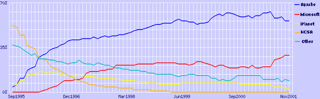
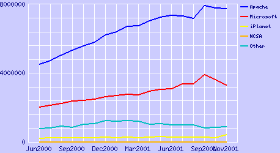

David A. Wheeler
dwheeler@dwheeler.com
Revisado el 25 de Enero de 2001
Traducido por
Eduardo Maldonado
eduardo.maldonado@hispalinux.es
El Software de Fuente Abierta / Software Libre (OSS/FS, del inglés Open Source Software / Free Software) está surgiendo con fuerza. Si no está usted seguro de lo que significan estos términos, puede conseguir una explicación de los mismos e información relacionada en mi list of Open Source Software / Free Software (OSS/FS) references at http://www.dwheeler.com/oss_fs_refs.html. Brevemente, los programas OSS/FS son programas cuya licencia permite a los usuarios la libertad de correr el programa para cualquier propósito, modificar el programa o redistribuir el programa original o el modificado (sin pago o restricciones sobre a quien le puedan entregar el programa). Aquellos que utilizan el término "software de fuente abierta" (open source software) tienen a emfatizar las ventajas técnicas de tal software (como rendimiento o seguridad), mientras que lo que usan el término "software libre" (free software) tienden a emfatizar la libertad sobre el control por cualquier otro. Lo opuesto a OSS/FS es el software "cerrado" o "propietario". Téngase en cuenta que muchos programas OSS/FS son programas comerciales, de forma que conviene no cometer el error de llamar al software OSS/FS software "no-comercial", y casi no hay programas SS/FS en el "dominio público", de modo que no utilice tampoco ese término.
Algunas direcciones proporcionan unas pocas anécdotas sobre porqué debería usted utilizar OSS/FS, pero por mucha que haya nunca hay suficiente información para justificar el uso de OSS/FS. En su lugar, este documento pone su atención en las medidas cuantitativas (tales como experimentos y estudios de mercado) que muestran porqué el uso de productos OSS/FS es, en algunas circunstancias, una decisión razonable e incluso superior. Quiero dejar claro que, aunque encuentro muchos motivos para que me guste el OSS/FS, no soy un furibundo defensor. Yo mismo utilizo tanto productos propietarios como OSS/FS. Los vendedores de productos propietarios trabajan también muy duro para encontrar números que justifiquen su oferta; esta página proporciona una antídoto utilizable de figuras complejas para ayudar en la comparación de estos productos propietarios con los OSS/FS.
Observerse además que el objetivo de este documento no es mostrar que todo el software OSS/FS es mejor que todo el software propietario. Hay quienes piensan que esto es cierto desde aproximaciones éticas, morales o sociales, pero ningún número demostraría ese tipo de aproximación. En su lugar, simplemente compararemos software comúnmente usaso OSS/FS con software propietario comúnmente usado, para mostrar que al menos en ciertas situaciones y bajo ciertas medidas, OSS/FS es al menos tan bueno, si no mejor, que sus competidores propietarios.
Pondremos especial interés en el sistema operativo GNU/Linux (que algunos abrevian como "Linux") y el servidor web Apache, una vez que estos son dos de los más visibles proyectos OSS/FS. Los compararemos inicialmente con Microsoft Windows, puesto que Windows tiene una cuota de mercado significativa, y Microsoft es uno de los defensores más fuertes del software propietario. Mencionaremos también de pasada los sistemas Unix, aunque la situación de Unix es más compleja; muchos sistemas Unix incluyen una cierta porción de componentes OSS/FS o de software propietario derivado inicialmente de componentes OSS/FS. Por ello, la comparación de sistemas Unix propietarios con sistemas OSS/FS (cuando se examina el sistema entero) no es un trabajo claro. Tanto Unix como GNU/Linux son sistemas "de tipo Unix". El sistema operativo más reciente de Apple Macintosh (MacOS X) presenta el mismo tipo de complicaciones; las versiones anteriores de MacOS eran completamente propietarias, pero el sistema operativo de Apple ha sido completamente rediseñado, de modo que ahora se basa en un sistema Unix con una sustancial contribución de programas OSS/FS. Es más, Apple está ahora reforzando abiertamente la colaboración con desarrolladores OSS/FS. Incluiremos datos de una serie de años, no sólo el año pasado; creo que todos los datos relevantes deberían considerarse cuando se debe tomar una decisión, en lugar de ignorar arbitrariamente los datos más antíguos, y los datos más antiguos muestran que OSS/FS tiene una historia con muchos rasgos positivos.
Lo siguiente es la discusión de datos de cuota de mercado, estabilidad, rendimiento, escalabilidad, seguridad, and coste total de propiedad. Cerraremos con una breve discusión de aspectos no cuantitativos, temores infundados, otras direcciones que proporcionan inforación relacionada, and conclusiones.
Mucha gente piensa que un producto sólo es un ganador si tiene una cuota de mercado significativa. Esto es muy simplista, pero tiene una base racional: los productos con una gran cuota de mercado tienen aplicaciones, usuarios entrenados, y mantenimientos que reducen riesgos futuros. Algunos autores argullen contra OSS/FS o GNU/Linux que "no forma parte de la corriente mayoritaria", que es minoritario, pero tal aseveración refleja el pasado, no el presente. Hay excelentes evidencias de que OSS/FS tiene una cuota de mercado significativa en numerosos mercados:
Apache es el 1º servidor web en la Internet Pública, y lo ha sido así desde Abril de 1996. Las estadísticas de servidores web de Netcraft han mostrado a Apache (un servidor web OSS/FS) como dominante del mercado de servidores web en la Internet Pública desde que Apache se convirtió en el primero de los servidores web en Abril de 1996. Por ejemplo, en Noviembre de 2001, Netcraft probó todos los sitios web que pudo encontrar (en total 36.458.394), y encontró que de todos los sitios que pudo probar, Apache tenía un 56'81 % del mercado, Microsoft tenía un 29,74 %, iPlanet (antes Netscape) un 3,59 % y Zeus un 2,20 %..
Cuota de Mercado de los Principales Servidores Web,
Agosto 1995 - Noviembre 2001

Más recientemente, Netcraft ha intentado distinguir los sitios "inactivos", puesto que se han instalado muchos sitios que son simplemente "ocupadores de espacio", que no están siendo utilizados activamente. Cuando se cuentan sitios activos, Apache sale incluso mejor parado: en Noviembre de 2001, Apache tenía un 61,88 % de los servidores web del mercado, Microsoft tenía un 26,40 %, iPlanet un 1,48 % y Zeus un 0,04 %.
Cuota
de Mercado para Servidores Web Activos, Junio 2000 - Noviembre
2001

Los mismos resultados generales los ha mostrado de forma independiente E-soft - su informe publicado el 1 de Julio de 2.001 revisó 3,178,197 servidores web, y encontró que Apache era el 1º (59.84%), Microsoft IIS 2º (28.42%). Obviamente, estas figuras fluctúan mensualmente; vea Netcraft y E-soft para obtener las últimas figuras de revisión.
GNU/Linux es el 2º sistema operativo sirviendo web en la Internet Pública (contando por dirección IP), de acuerdo al estudio de revisión de Marzo y Junio de 2.001. Algunas de las revisiones de Netcraft tambíen han incluido datos sobre sistemas operativos; dos revisioens en 2.001 (las de Junio de 2001 y Septiembre de 2001) encontraron que GNU/Linux es el 2º sistema operativo para servidores web cuando se cuentan por dirección IP (y ha ido ganando consistentemente cuota de mercado desde Febrero de 1.999). Cada conexión a una red accesible al público se da por un número único llamado dirección IP, y esta revisión utiliza las direcciones IP (su revisión de servidores web cuenta por nombre, no por dirección IP). Un añadido rápido: Netcraft da la fecha de su información basada en las revisiones de servidores web (no en la fecha de publicación), y los únicos informes de sistemas operativos resumen datos de un mes inicial. Así, la revisión con fecha "Junio de 2001" se publicó en Julio, y cubre resultados de revisiones de sistemas operativos de Marzo de 2.001, mientras que la revisión de fecha "Septiembre de 2.001" se publicó en Octubre, y cubre los resultados de su revisión de Junio de 2.001. Aquí tenemos un resumen del estudio de Netcraft:
|
Grupo de S.O,s |
Porcentaje (Marzo) |
Porcentaje (Junio) |
Composición |
|---|---|---|---|
|
Windows |
49.2% |
49.6% |
Windows 2000, NT4, NT3, Windows 95, Windows 98 |
|
[GNU/]Linux |
28.5% |
29.6% |
[GNU/]Linux |
|
Solaris |
7.6% |
7.1% |
Solaris 2, Solaris 7, Solaris 8 |
|
BSD |
6.3% |
6.1% |
BSDI BSD/OS, FreeBSD, NetBSD, OpenBSD |
|
Other Unix |
2.4% |
2.2% |
AIX, Compaq Tru64, HP-UX, IRIX, SCO Unix, SunOS 4 y otros |
|
Other no-Unix |
2.5% |
2.4% |
MacOS, NetWare, SO,s proprietarios de IBM |
|
Desconocidos |
3.6% |
3.0% |
SO;s no identificados por el detector de Netcraft |
Mucho depende de lo que quiera medir. Varios de los sistemas BSDs (FreeBSD, NetBSD, and OpenBSD) son también OSS/FS; de modo que al menos una porción del 6.1% de BSD se debería añadir al 29,6 % de GNU/Linux para determinar el porcentaje de sistemas operativos OSS/FS utilizados como servidores web. De esta forma, aproximadamente una tercera parte de los ordenadores servidores web utilizan sistemas operativos OSS/FS. Hay además diferencias regionales, por ejemplo, GNU/Linux supera a Windows en Alemania, Hungría, República Checa y Polonia.
Sitios Web bien conocidos que utilizan GNU/Linux incluyen the White House, Google, y Rackspace. Otros sitions web bien conocidos que utilizan otros sistemas operativos OSS/FS son, por ejemplo Yahoo y Sony Japan, que usan FreeBSD.
Si realmente quiere saber la relación del mercado de servidores web entre "Unix y Windows", lo puede encontrar también es este estudio. Todos los sistemas operativos Windows se han reunido en un único número, (incluso Windows 95/98 y Windows 2000/NT4/NT· se han juntado, aunque son fundmentalmente muy diferentes). Una reunión similar de los ordenadores Unix produce un total del 44'8 % para sistemas de tipo Unix en Marzo de 2.001 (comparado con el 49,2 % de Windows).
Nótese que estas figuras probáblemente diferirían mucho si estuviesen basadas en direcciones web en lugar de direcciones IP; en tal caso, una clara mayoría de direcciones web se encuentran en sistemas de tipo Unix. Como establece Netcraft, "Aunque Apache corriendo en varios sistemas Unix corre más sitios que Windows, Apache está fundamentalmente instalado en compañías de hosting y ISP,s que corren tantos sitios como pueden en un único ordenador para ahorrar costes".
GNU/Linux es el 1º de los sistemas operativos de servidores en la Internet pública (contando por nombre de dominio), de acuerdo a una revisión de 1.999 de sitios educativos y fundamentalmente europeos. El primer estudio que he encontrado que revisó la penetración del mercado de GNU/Linux es una revisión de Zoebelein in April 1999. Esta revisión encontró que, del total de servidores desplegados en Internet en 1.999 (corriendo al menos ftp, news, o http (WWW)) en una base de datos de nombres que él utilizó, el primer sistema operativo era GNU/Linux (con un 28,5 %), con el resto detrás. Es importante notar que en esa revisión, que es la primera que he encontrado que intenta responder a cuestiones de cuota de mercado, utilizó bases de datos preexistentes de servidores de .edu (dominio educativo) y la base de datos RIPE (que cubre Europa, Oriente Medio, partes de Asia, y partes de Africa), de forma que esto no es realmente una revisión de "todo Internet" (por ejemplo, omite ".com" y ".net"). Es una cuenta por nombre de dominio (es decir, el texto del nombre que se teclea en la barra de direcciones del navegador), en lugar de por dirección IP, de forma que esta cuenta es diferente de la de Netcraft.com de Junio de 2.001. Además, este estudio contó los servidores que proporcionan servicios de ftp y news (y no sólo servidores web).
Aquí tenemos cómo aparecen en el estudio los diferentes sistemas operativos:
|
Cuota de Mercado |
Sistema Operativo |
Composición |
|---|---|---|
|
GNU/Linux |
28.5% |
GNU/Linux |
|
Windows |
24.4% |
Todos los Windows combinados (incluyendo 95, 98, NT) |
|
Sun |
17.7% |
Sun Solaris o SunOS |
|
BSD |
15.0% |
Familia BSD (FreeBSD, NetBSD, OpenBSD, BSDI, ...) |
|
IRIX |
5.3% |
SGI IRIX |
Una porción de la familia BSD es también OSS/FS, de modo que el total de sistemas operatiovs OSS/FS es incluso mayor; si alrededor de 2/3 de los BSD,s son OSS/FS, la cuota total de OSS/FS sería alrededor del 40%. Los defensores de los sistemas de tipo UNIX notarán que la mayoría (alrededor del 66%) estaban corriendo sistemas UNIX, mientras que sólo alrededor de un 24 % corrían variantes de Microsoft Windows.
GNU/Linux es el 2º sistema operatiov más vendido en 1.999 y 2.000, y el de más rápido crecimiento. De acuerdo a la revisión de Junio de 2.000 de IDC de 1999 licenses, 24% de todos los servidores ( contanto tanto servidores de Internet como intranets) instalados en 1999 corrían GNU/Linux. Windows NT fué el primero con el 36%; todos los otros UNIX combinados sumaban el 15%. De nuevo, una vez que algunos de los UNIX son sistemas OSS/FS (p.e., FreeBSD, OpenBSD, y NetBSD), el número de sistemas OSS/FS es en realidad mayor de lo que muestran las figuras de GNU/Linux. Notése que todo depende de lo que se quiera contar; 39% de todos los servidores instalados según la revisión eran de tipo UNIX (esto es: 24%+15%), de forma que los servidores ``tipo UNIX'' eran en ese momento los primeros en la cuota de mercado instalado, una vez que se cuenten juntos GNU/Linux y Unix.
IDC proporcionó un estudio similar el 17 de Enero de 2001 titulado ``Server Operating Environments: 2000 Year in Review''. En el servidor, Windows contó un 41 % de las ventas de sistemas operativos para nuevos servidores del año 2.000, creciendo un 20 % - pero GNU/Linux contó un 27% y creció incluso más rápido, un 24%. Otros UNIX principales tenían un 13%.
Este tipo de datos (y los datos proporcionados por TCO más tarde) han inspirado exclamaciones como esta del director de TI el 12 de Noviembre de 2.001: ``Linux en el escritorio está demasiado verde para utilizarlo, pero en el servidor ya parece ser imparable.''
Estas medidas no miden todos los sistemas instalados durante el año: algunos sistemas Windows no han sido pagados (pues ha sido ilegalmente pirateados), y los sistemas OSS/FS como GNU/Linux y BSD,s son en ocasiones descargados e instalador en múltiples sistemas (dado que es legal y libre hacerlo).
Un estudio de Evans Data publicado en Noviembre de 2.001 encontró que el 48.1% de los desarrolladores internacionales y el 39.6% de los norteamericanos planean dirigir la mayoría de sus aplicaciones a GNU/Linux. La edición de Noviembre de 2.001 de la Serie de Estudios del Desarrollo Internacional de Evans Data informó tras entrevistas personales con más de 400 desarrolladores que representan a alrededor de 70 paises que cuando se les preguntaba sobre el sistema operativo para el que planeaban dirigir la mayoría de sus aplicaciones en el próximo año, el 48,1 % de los desarrolladores internacionales y el 39,6 % de los norteamericanos indicaron a GNU/Linux. Esto es particularmente sorprendente una vez que sólo un año antes, menos de un tercio de la comunidad de desarrolladores internacionales estaba escribiendo aplicaciones GNU/Linux. El informe también indicaba que el 37,8 % de la comunidad de desarrolladores internacionales y el 33,7 % de los desarrolladores norteamericanos ya habían escrito aplicaciones para GNU/Linux, y que más de la mitad de ellos indicaban tener suficiente confianza en GNU/Linux para aplicaciones de misión crítica.
Microsoft financió su propia investigación para "demostrar" que GNU/Linux no se estaba usando extensamente, pero se ha demostrado que esta investigación estaba seriamente manipulada. Microsoft financió un informe Dataquest del Gartner Group que indicaba que sólo el 8,6 % de los servidores vendidos en Estados Unidos durante el tercer cuarto de 2.000 estaba basado en Linux. Sin embargo, hay serias sopechas de que Microsoft, (como financiador de la investigación) había incentivado la aparición de números bajos, y esto números difieren claramente de los de la investigación de IDC sobre el mismo tema. Kusnetzky, de IDC, comentó que explicación sencillamente era que el Gartner había utilizado una definición de "vendido" muy limitada: pensaba que el número era "muy razonable" si sólo se miran nuevos servidores con Linux, "pero nuestra investigación indica que esta no es la forma en que la mayoría de los clientes adquieren Linux. Hemos detectado que sólo un 10 o 15 por ciento de la adopción de Linux viene de máquinas preinstaladas... porque por cada copia pagada de Linux, hay una copia gratuíta que puede replicarse 15 veces". Téngase en cuenta que es muy dificil comprar un nuevo ordenador x86 que no tenga un sistema operativo Microsoft instalado (Microsoft establece contratos con los fabricantes de ordenadores para asegurarse esto), pero eso no indica que sea ese el sistema que luego se utilice. Gartner indicó que había utilizado entrevistas para descontar este problema, pero los resultados finales de su investigación (cuando se comparan con los hechos conocidos) sugieren que Gartner no tuvo realmente en cuenta ese efecto. Por ejemplo, Gartner indica las ventas de Linux en el terreno de las supercomputadoras fueron "cero". De hecho, Linux se emplea ampliamente en el campo de clusters paralelos en muchos sitios científicos, incluyendo un cierto número de sitios de alto perfil. Muchos de esos sistemas se ensamblaron "en el sitio", mostrando que el método de Gartner de definir una "venta" no parece corresponderse con las instalaciones que están trabajando. El artículo del Register, ``Nadie está usando Linux'' (con su compañero ``90% Windows..'') discute este punto más a fondo. En resumen, la investigación financiada por Microsoft muestra números bajos, pero esto números son muy sospechosos.
GNU/Linux tiene el 80% de ventas de ordenadores cliente que MacOS de Apple en 1.999. De acuerdo a la revisión de Junio de 2.000 de IDC of 1.999 licencias (5.0% para Mac OS, 4.1% para GNU/Linux), ya se venden tantas licencias cliente de GNU/Linux como de MacOS - y nadie duda de que MacOS es un sistema cliente.
Actualmente, GNU/Linux es un contendiente relativamente nuevo en el mercado de sistemas operativos (SO) clientes, y tiene una penetración en el mercado relativamente pequeña. Esto no debería ser sorprendente: contra la salud de las aplicaciones de servidor y de desarrollo, GNU/Linux tiene relativamente pocas aplicaciones cliente OSS/FS y muchas de estas aplicaciones aún están madurando. Hay aplicaciones cliente comerciales (como el Word Perfect de Corel), pero no son OSS/FS, y están disponibles también en otras plataformas. Sin fuertes aplicaciones cliente OSS/FS, particularmente una suite ofimática, GNU/Linux no tiene una fuerte ventaja sobre otras plataformas clientes. Después de todo, GNU/Linux combinado con una suite ofimática propietaria pierde la libertad y el bajo coste de simplemente un sistema OSS/FS, y tiene que competir con los sistemas propietarios establecidos que tienen más aplicaciones utilizables en su entorno. Microsoft Office es esencialmente un monopolio que controla la arena de las suite ofimáticas, y no está disponible en GNU/Linux (la segunda mayor de las suites ofimáticas es Corel, y una vez que Corel es parcialmente propiedad de Microsoft, Corel ya no se puede considerar realmente un competidor para Microsoft). Varias aplicaciones ofimáticas OSS/FS están ahora mismo madurando, (como StarOffice / OpenOffice), y las alternativas incluyen AbiWord, Gnumeric, y la suite KOffice. Además, el coste del cambio a todos estos escritorios además de los problemas de compatibilidad con un monopolio atrincherado hace dificil utilizar nada que no sea Windows y Office en los clientes.
Sin embargo, a pesar de la debilidad de aplicaciones clientes OSS/FS en varias áreas clave en este momento, an IDC study determió que GNU/Linux capturó un 4 % del mercado en 1.999. De forma mäs general, IDC determinó que se vendieron 98,6 millones de sistemas operativos clientes en 1.999, de los cuales Windows 3.x, 95 y 98 juntarón un 66 %, Windows NT un 21 %, MacOS un 5% y GNU/Linux un 4%.
Hay algunas indicaciones interesantes de que esto puede cambiar en el futuro. Algunas organizaciones, como TrustCommerce y la ciudad de Largo, Florida, informan que han cambiado con éxito a Linux en el escritorio. Será interesante ver si estos números empiezan a cambiar en 2002-2004, cuando las anteriormente mencionadas aplicaciones clientes OSS/FS (como AbiWord y OpenOffice) empezarán a rivalizar con sus aplicaciones propietarios rivales tanto en usabilidad como en la funcionalidad que los usuarios necesitan. Hay ya algunas evidencias de que otros han anticipado también esto: Richard Thwaite, director de TI de Ford Europa, indicó en 2.001 que su objetivo era un escritorio open source, y que estaba esperando a la industria para migrar eventualmente a él (el controla 33.000 escritorios, de modo que este no sería un movimiento trivial). Se podría argumentar que esto es sólo "un farol" en su negociación con Microsoft - pero esos "faroles" sólo funcionan si son creibles.
|
Uso esperado de GNU/Linux |
Pequeñas empresas |
Medianas empresas |
Grandes empresas |
Total |
|---|---|---|---|---|
|
Incremento del 50% |
21.0% |
16% |
19.0% |
19% |
|
Incremento del 10-25% |
30.5% |
42% |
56.5% |
44% |
|
Sin crecimiento |
45.5% |
42% |
24.5% |
36% |
|
Reducción |
3.0% |
0% |
0% |
1% |
Se puede ver más sobre este estudio en ``La Nueva Religion: Linux y el Open Source'' (ZDNet) y en el artículo de 5 de Febrero de 2.001 de InfoWorld ``Linux ilumina la empresa: Pero amenaza la estabilidad de los venedores de SO.''
Los 1000 mayores Proveedores de Servicios de Internet esperan que el uso de GNU/Linux se incremente un 154%, de acuerdo con un estudio de Idaya's realizado entre Enero y Marzo de 2.001. Un estudio realizado por Idaya de los 1000 mayores PSI,s encontró que ellos esperan un crecimiento del usho de GNU/Linux de hasta un 154% en 2.001. Además, casi dos tercios (64%) de los PSI,s consideran que el software open source lider cumple con los estándares requeridos para aplicaciones de nivel empresarial, comparable con el software propietario. Idaya produce software OSS/FS, lo que se debe mantener en mente como un sesgo potencial.
IBM encontró un incremento del 30% en el número de aplicaciones de nivel empresarial para GNU/Linux en el primer semestre de 2.001. Durante algún tiempo, era común exclamar ``No hay suficientes aplicaciones que corran en GNU/Linux'' para un uso de nivel empresarial. Sin embargo, IBM encontró que hay más de 2.300 aplicaciones GNU/Linux (un incremento del 30% en 6 meses) disponibles en IBM y los vendedores independientes de software líderes (ISVs). Un Informe especial sobre Informática en Redes en Linux para la Empresa discute algunos de los punto s fuertes de GNU/Linux, y encuentra muchas cosas positivas que decir sobre GNU/Linux para aplicaciones empresariales.
Puesto que GNU/Linux es similar a UNIX, los profesionales de TI que ya están formados en UNIX pueden fácilmente actualizarse a GNU/Linux.
TechRepublic sugiere que los ejecutivos de TI deberían inventariar los conocimientos de sus plantillas, porque podrían descubrir que sus organizaciones ya pueden soportar GNU/Linux, si es que no lo están usando aún.
Sendmail, un programa OSS/FS, es el servidor de correo líder. Un estudio realizado entre el 2001-09-27 y 2001-10-03 por D.J. Bernstein de un millón de direcciónes IP aleatorias se conectó con éxito a 958 servidores SMTP (email) -esos servidores también se conocen como agentes de transporte de correo, o MTA,s-. Bernstein encontró que Sendmail sobre UNIX tenía la mayor cuota de mercado (42% de todos los servidores de correo), seguido de Windows Microsoft Exchange (18%), UNIX qmail (17%), Windows Ipswitch IMail (6%), UNIX smap (2%), UNIX Postfix (antes conocido por VMailer, 2%) y Unix Exim (1%). Tengase en cuenta que Bernstein implementa uno de los competidores de Sendmail (qmail), de modo que se encuentra "desincentivado" para identificar la cuota de mercado de Sendmail. Qmail no es OSS/FS, porque los derivados de Qmail no se pueden redistribuir libremente; Qmail es ``fuente visible'', por lo que algunas personas están confundidas al creer que Qmail es OSS/FS. Sin embargo, Sendmail, Postfix, y Exim son OSS/FS. Por ello, no sólo es el programa lider (Sendmail) OSS/FS, sino que los programas OSS/FS tienen más del doble de las instalaciones que sus más inmediatos competidores.
Una investigación durante el segundo cuarto del año 2.000 encontró que el 95 % de los servidores de nombres de dominio (DNS) de revisión inversa utilizaban bin, un producto OSS/FS. Internet se compone d muchos componentes de infraestructura mayormente invisibles. Esto incluye a los servidores de nombres de dominios (DNS), que toman los nombres de máquina legibles por las personas (como "yahoo.com"), y los traducen en sus direcciones numéricas. Las máquinas públicamente accesibles generalmente también soportan "revisión inversa", lo que convierte direcciones numéricas en nombres; por razones históricas, esto se implementó utilizando el dominio oculto "in-addr.arpa". Investigando el dominio in-addr, se puede estudiar el interior de cómo está soportado Interent. Bill Manning ha revisado el dominio in-addr y ha encontrado que el 95 % de todos los servidores de nombres (en el segundo cuarto de 2.000) realizan esta importante tarea de infraestructura de internet utilizan alguna versión de "bind". Bind es un programa OSS/FS.
Hay un montón de histórias anécdoticas sobre que el OSS/FS es más estable, pero al finalmente también hay datos cuantitativos que confirman que los programas OSS/FS son más estables:
Las aplicaciones equivalentes OSS/FS son más estables, de acuerdo a un estudio de 1995. El documento de 1.995 ``Fuzz Revisited'' midió la estabilidad enviando a los programas caracteres aleatorios y determinando cuales resistían a las caidas y los bloqueos. Algunos investigadores rechazan estas medidas, indicando que esta aproximación es incapaz de encontrar fallos sutiles, pero los autores del estudio hacen notar que su aproximación aún se maneja para encontrar muchos errores en software en producción, y es una herramienta utilizable para encontrar fallos en el software.
OSS/FS tiene mayor estabilidad según estas medidas. Se indica en la sección 2.3.1 que:
Es también interesante comparar los resultados de probar los sistemas comerciales con los resultados de probar "software libre" GNU y Linux. Los siete sistemas comerciales en el estudio de 1.995 tuvieron un promedio de fallos del 23 %, mientras que Linux tuvo un promedio de fallos del 9 %, y las utilidades GNU tuvieron un promedio de fallos de sólo el 6 %. Es razonable preguntar porqué un grupo de programadores globalmente dispersos, sin soporte de pruebas formales o estandares de ingeniería del software puede producir código que es más estable (al menos, según nuestras medidas) que el código producido comercialmente. Incluso si se consideran sólo las utilizadas que estaban utilizables en GNU o Linux, el promedio de fallos para estos dos sistemas era mejor que en otros sistemas.
Hay evidendia de que las aplicaciones Windows NT tienen similar establidad a las del software propietario UNIX (es decir, menos estable que el software OSS/FS). Un documento posterior, ``Un Estudio Empírico de la Robustez de las Aplicaciones de Windows NT Utilizando Pruebas Aleatorias'', encontró que con aplicaciones gráficas Windows NT, abortaban el 21 % de las aplicaciones que probaban, fallaban un 24 % adicional de las aplicaciones, y abortaban o fallaban todas las aplicaciones que probaban cuando las sometían a mensajes Win32 aleatorios. Con ello, no hay evidencias de que el software Windows sea más estable que el OSS/FS según esta medida.
Aunque este experimento se realizó en 1.995, nada indica que el software propietario se haya vuelto mucho mejor que los programas OSS/FS desde entonces. En su lugar, puesto que desde 1.995 se ha incrementado el interés y la participación en OSS/FS, resulta que cada vez más "ojos avizores" están examinando e incrementando la estabilidad de los programas OSS/FS.
Y ahora seamos cuidadosos: OSS/FS no es una varita mágina: ¡el software beta de cualquier tipo siempre contendrá errores! Sin embargo, el experimento de 1.995 midió programas OSS/FS maduros con programas propietarios maduros, y el software OSS/FS era más estable bajo estas medidas.
GNU/Linux es más estable que Windows NT, según un experimento de 10 meses de ZDnet . ZDnet corrió una prueba de 10 meses de estabilidad comparando Caldera Systems OpenLinux, Red Hat Linux, y Microsoft's Windows NT Server 4.0 con Service Pack 3. Los tres utilizaron hardware identico (de una CPU), y se enviaron en paralelo a cada servidor requerimientos de red solicitando servicios de Internet estandar, de ficheros y de impresión. El resultado: NT abortaba un promedio de una vez cada seis semanas, llevandose alrededor de 30 minutos para corregirlo; eso no es malo, pero mientras tanto, ningún servidor GNU/Linux cayo. Este artículo de Zdnet también hace un buen trabajo identificando las debilidades de GNU/Linux (es decir, las aplicaciones de escritorio y el multiprocesamiento simétrico paralelo -SMP- masivo).
GNU/Linux es más estable que Windows NT, de acuerdo a un experimento de un año de Bloor Research. Bloor Research tuvo ambos sistemas operativos corriendo en máquinas Pentim relativamente antíguas. En el espacio de un año, GNU/Linux abortó una vez a causa de un fallo de hardware (problemas con el disco), que probocó 4 horas de reparación, dando una disponibilidad medida del 99,95 %. Windows NT abortó 68 veces, causadas por problemas de hardware (discos), memoria (26 veces), mantenimiento de ficheros (8 veces), y una cantidad de problemas aislados (33 veces). Todo ello necesito 65 horas para corregirse, dando una disponibilidad del 99,26 %. Es intrigante que el único problema GNU/Linux y una cantidad de los problemas de Windows NT estaban relacionados con el hardware; ser podria argüir que el hardware de que disponía Windows era peor, o se podría argüir que GNU/Linux hizo un mejor trabajo evitando o conteniendo los fallos de hardware. En cualquier caso , los fallos del mantenimiento de ficheros se pueden asignar a Windows, y los "problemas aislados" parecen ser causados también por Windows, indicando que GNU/Linux es más estable que Windows. Gnet resumió esto diciendo "el ganador era cláramente Linux".
|
Tiempo de Caida |
Apache |
Microsoft |
Netscape |
Otros |
|
Septiembre |
5.21 |
10.41 |
3.85 |
8.72 |
|
Octubre |
2.66 |
8.39 |
2.80 |
12.05 |
|
Noviembre |
1.83 |
14.28 |
3.39 |
6.85 |
|
Promedio |
3.23 |
11.03 |
3.35 |
9.21 |
No es dificil notar que Apache (el servidor web OSS) tiene los mejores resultados en el promedio de los tres meses (y con mejores resultados en el tiempo, también). Especialmente, el peor més de Apache es mejor que el mejor mes de Microsoft. Creo que la diferencia entre Apache y Netscape es estadísticamente insignificante, pero también muestra que la solución OSS/FS líbremente disponible (Apache) muestra una estabilidad al menos tan buena como la más estable de las soluciones propietarias. El informe también hace notar que esto no debe ser sólo consecuencia de la estabilidad del software, puesto que varias direcciones Microsoft IIS muestran pequeñas interrupciones en el mismo perios del día (sugiriendo rearranques regulares). Sin embargo, esto aún mantiene la cuestión:: ¿proqué las direcciones con IIS requieren muchos más rearranques regulares que las direcciones con Apache? Cada parada, incluso si es planeada, resulta en una pérdida del servicio (y para direcciones dedicadas al comercion electrónico, una potencial pérdida de ventas)..
De acuerdo con un estudio separado de útima hora de Netcraft, al OSS/FS le va muy bien: según mostraba el 3 de Agosto de 2.001, de las 50 direcciones con mayor tiempo de funcionamiento continuado, el 92 % utilizan Apache, y el 50 % utilizan un sistema operativo OSS/FS. Netcraft mantiene un ranking de las 50 direcciones más requeridad con los mayores peridos de funcionamiento continuado en http://uptime.netcraft.com. Estudiando el informe de 3 de Agosto de 2.001, observo que el 92 % (46/50) de estas direcciones utilizan Apache, uno de los servidores web era desconocido, y los otros tres no eran Apache. De estos tres, sólo uno informaba ser Microsoft IIS, y aún este era sospechoso, ya que indicaba que sus sistema operativo era BSD/OS (esta aparente inconsistencia puede explicarse de varias maneras, por ejemplo con la existencia de un front-end BSD/OS que "enmascara" al servidor web IIS, o bien porque el servidor web está ocultando su verdadera identidad para confundir a los atacantes). En esta muestra, el 50 % (25/50), corrían en un sistema operativo de fuente abierta (open source), y sólo sistemas operativos de tipo UNIX tenías estas periodos de funcionamiento continuado mayores (ningún sistema Windows aparece en esta clasificación) (N.d.T. Se pueden observar resultados muy parecidos, en el momento de traducir este mismo documento, si vemos la situación a fecha de hoy).
Como ocurre con todos los estudios, este tiene una debilidad, como se muestra en Netcraft's Uptime FAQ. Sus técnicas para identificar servidores web y sistemas operativos puede ser burlada. Sólo se incluyen en el estudio los sistemas para los que Netcraft haya enviado muchos requerimientos (y esos no sos "todos los sitios del mundo"). Cada dirección a la que se lanza el formulario de consulta "qué está corriendo", se añade al conjunto de direcciones que se muestrean rutinariamente, y Netcraft no monitoriza rutinariamente los 22 millones de direcciones que se conocen, por razones de rendimiento. Muchos sistemas operativos no proporciones información actualizada y por ello no se pueden incluir, y esto incluye a AIX, AS/400, Compaq Tru64, DG/UX, MacOS, NetWare, NT3/Windows 95, NT4/Windows 98, OS/2, OS/390, SCO UNIX, Sony NEWS-OS, SunOS 4, y VM. Por ello, este contador de funcionamiento continuado sólo puede incluir sistemas que corren BSD/OS, FreeBSD (pero no la configuración de defecto en versiones 3 y posteriores), versiones reicentes de HP-UX, IRIX, GNU/Linux kernel 2.1 posterior (excepto en sistemas basados en procesador Alpha), MacOS X, versiones recientes de NetBSD/OpenBSD, Solaris 2.6 y posteriore y Windows 2000. Observese que los sistemas Windows NT no se pueden incluir en este estudio (porque no indican su periodo de funcionamiento), pero sí se incluyen los sistemas Windows 2000. De nuevo, ningún sistema Windows forma parte de los 50 mayores periodos de funcionamiento continuado en esta muestra. Observerse que HP-UX, (muchas versiones de ) GNU/Linux, Solaris y las versiones recientes de FreeBSD vuelven a cero tras 497 días, exactamente como si la máquina se hubiese rearrancado en ese preciso momento. Por ello no se puede ver un sistema HP-UX, (la mayoría de los) GNU/Linux, o Solaris con medidas de funcionamiento continuado superiores a 497 días, y de hecho sus periodos de funcionamiento pueden estar equivocados (pueden estar levantados durante un largo periodo de tiempo, pero no decirlo). Aún asi, este sistema compara Windows 2000, GNU/Linux (habitualmente hasta los 497 días), FreeBSD y varios sistemas operativos más, y una gran cantidad de servidores web, y el OSS/FS sale bastante bien librado.
Por supuesto, hay muchas anecdotas sobre la estabilidad de Windows contra la de UNIX. Por ejemplo, el programa ``Smart Ship'' de la Marina de los USA, causó un fallo completo todo el USS Yorktown en Septiembre de 1997. Anthony DiGiorgio (un whistle-blower -literalmente "soplador de silbato", equivalente al cornetín de órdenes español-) indicó que Windows era ``la fuente de los problemas de computadoras del Yorktown''. Ron Redman, diputado director técnico de la División de Introducción de la Flota de la Oficina Ejecutiva del Programa Aegis, dijo que "ha habido numerosos fallos de software asociados con [Windows] NT a bordo del Yorktown". Redman también dijo que "a causa de la política, nos han forzado a hacer cosas que sin política no habríamos hecho, como Windows NT... De haber sido por mi, probáblemente no habría utilizado Windows NT en esta aplicación particular. De haber utilizado UNIX, tendríamos un sistema con menos tendencia a caer".
Un problema con las medidas de estabilidad es que se llevan un largo periodo de tiempo de recogida de datos en circunstancias de estabilidad de la vida real. Sin embargo, la evidencia disponible sugiere que OSS/FS tiene un significativo éxito en materia de estabilidad.
La comparación entre el rendimiento de GNU/Linux y Microsoft Windows en hardware equivalente tiene una nutrida historia de llamadas contínuas y resultados diferentes basados en diferentes asunciones. Pienso que OSS/FS ha demostrado que es cuando menos suficientemente competitivo, y en muchas circunstancias incluso gana la competición.
Las comparaciones de rendimiento son muy sensibles a las asunciones previas y al ambiente, de modo que la mejor comparación es la que se realice usted mismo para su ambiente deseado. En su ausencia, debería usted utilizar medidas no sesgadas, porque es demasado facil crear medidas sesgadas.
Primero, hay unos pocos estudios recientes que sugieren que algunos sistemas OSS/FS baten a sus competidores propietarios en al menos algunas circunstancias:
PC Magazine de Noviembre de 2.001 comprobó el rendimiento de servidores de ficheros, y encontró que Linux con Samba superaba significativamente a Windows 2.000. El artículo de PC Magazine Pruebas de Rendimiento: Volumen Servido y Tiempo de Respuesta de un Servidor de Ficheros encontró que Linux con Samba superaba significativamente a Windows 2000 Server cuando se utiliza como servidor de ficheros para los protocolos de ficheros en red propietarios de Microsoft. Esto era cierto sin mirar el número de clientes simultáneos (ellos probaron hasta 30 clientes), y era cierto en el rango completo de máquinas que comprobaron (Pentium II/233MHz con 128MiB RAM, Pentium III/550MHz con 256MiB RAM, y Pentium III/1GHz con 512MiB RAM, donde MiB is 2^20 bytes). Además, conforme la máquina era más capaz, la diferencia se volvía más pronunciada. En el hardware más rápido, mientras se manipulaba el mayor número de clientes, el volumen de salida de GNU/Linux era alrededor de 130 MB/sec, contra los 78 MB/sec de Microsoft (GNU/Linux era un 78 % más rápido).
En pruebas de rendimiento de la revista Sys Admin, GNU/Linux batió a Solaris (en Intel), Windows 2000, y FreeBSD. El artículo ``¿Qué SO es más Rápido para Aplicaciones de Red de Alto Rendimiento?'' en la edición de Julio de 2.001 de la revista Sys Admin examinó arquitecturas d alto rendimiento, y encontró que GNU/Linux vencía esta competición cuando se le comparaba con Solaris (en Intel), FreeBSD (un sistema OSS/FS), y Windows 2000. Intencionadamente corrían los sistemas "conforme salen de la caja" (sin ajustar), excepto para el incremento de conexiones TCP/IP simultáneas (cosa necesaria para probar las aplicaciones asíncronas y multi-hebras). Utilizaron la última versión de cada sistema operativo en exactamente la misma máquina. Realizaron un informe (por sistema operativo) de los resultados de dos pruebas de rendimeinto diferentes.
Los desarrolladores de FreeBSD criticaron eston resultados, notando que FreeBSD por defecto pone emfasis en la estabilidad (no en la velocidad), y que ellos esperaban que cualquiera con una necesidad de rendimiento significativa, primero habría realizado un ajuste. Por ello, Sys Admin rehizo las pruebas de FreeBSD tras ajustar FreeBSD. Un cambio que hicieron fue cambiar a montaje "asincrono", lo cual hace más rápido el sistema, (aunque incrementa el riesgo de perdida de datos en caso de fallo de potencia) - este es el defecto en GNU/Linux y es muy facil de implementar en FreeBSD, de modo que era una modificación muy pequeña y razonable. Sin embargo, también realizaron muchos otros cambios, por ejemplo encontraron y compilaron 17 parches de FreeBSD y utilizaron varios comando de ajuste. Los otros sistemas operativos no sufrieron un cambio a "ajustados" como este, de modo que comparar sistemas operativos sin ajustar con un FreeBSD ajustado no es realmente correcto.
En cualquier caso, aquí están las dos pruebas de rendimiento:
En sus "pruebas de I/O a disco", crearon, escribieron y leyeron 10.000 ficheros de tamaño idéntico en un único directorio, variando el tamaño de las instacias de los ficheros. Aquí Solaris era el más lento, con FreeBSD ajustado el segundo más lento. FreeBSD ajustado, Windows 2000 y GNU/Linux tenían velocidades similares en los tamaños de ficheros más pequeños (en algunos casos FreeBSD ajustado era más rápido, como en los tamaños de 8 k y 16 k), pero cuando los tamaños de los ficheros ser fueron a 64 k o 128 k, los sistemas operativos empezaron a mostrar diferencias de rendimiento significativas: GNU/Linux era el más rápido, después Windows 2000, y luego FreeBSD. En 128 k, FreBSD era un 16 % peor que Windows 2000 y un 39 % peor que GNU/Linux: todos eran más rápidos que FreeBSD sin ajustar y Solaris. Cuando se totalizaron esos tiempos a lo largo de todos los ficheros, los resultados eran GNU/Linux: 542 segundos, Windows 2000: 613 segundos, FreeBSD ajustado, 630 segundos, FreeBSD sin ajustar 2398 segudos, y Solaris 3990 segundos.
|
System |
Windows SPEC Result |
Linux SPEC Result |
|---|---|---|
|
Dell PowerEdge 4400/800, 2 Pentium III Xeon a 800MHz |
1060 (IIS 5.0, 1 controlador de red) |
2200 (TUX 1.0, 2 controladores de red) |
|
Dell PowerEdge 6400/700, 4 Pentium III Xeon a 700MHz |
1598 (IIS 5.0, 7 discos de 9GB a 10KRPM) |
4200 (TUX 1.0, 5 discos de 9GB a 10KRPM) |
|
Dell PowerEdge 8450/700, 8 Pentium III Xeon a 700MHz |
7300/NC (IIS 5.0, 1 disco de 9Gb a 10KRPM and 8 discos de 16Gb
a 15KRPM) |
7500 (TUX 2.0, 5 discos de 9Gb a 10KRPM) |
La primera fila (el PowerEdge 4400/800) realmente no prueba nada. El sistema IIS tiene menos rendimiento, pero sólo tiene un controlador de red y el sistema TUX tiene dos, de modo que mientras el sistema TUX tiene mejor rendimiento, podría ser simplemente porque puede utilizar dos conexiones de red.
La segunda entrada (el PowerEdge 6400/700) ciertamente sugiere que GNU/Linux más TUX realmente es mucho mejor - el sistema IIS tiene dos discos más disponibles, (lo cual debería incrementar el rendimiento), pero el sistema TUX tiene más del doble del rendimiento del sistema IIS.
La última entrada para el PowerEdge 8450/700 es incluso más compleja. Primero, los discos son diferentes - el sistema IIS tiene al menos un disco que gira más rápido que los que dispone el sistema TUX (lo que debería dar al sistema ISS una ventaja de rendimieno, dada la velocidad de transferencia ciertamente mayor). Además, también tiene más discos, (dando de nuevo otra ventaja de rendimiento al sistema IIS). Cuando originalmente coloqué esta tabla junta, mostrando todos los datos públicamente disponibles en Abril de 2.001 (cubriendo desde el tercer cuarto de 1.999 hasta el primer cuarto de 2.001), IIS 5.0 (en un Dell PowerEdge 8450/700 con 8 procesadores) tenía un valor de SPECweb99 de 7300. Desde ese momento, Microsoft cambió la disponibilidad de Microsoft SWC 3.0, y según las reglas de SPECweb99, estos datos hacen que los resultados de la prueba sean "no cumplidores" (NC). Esto es sutil: no es que la prueba misma fuera inválida, es que Microsoft cambió lo que se podía utilizar, y utilizó las propias reglas del SPEC Consortium para invalidar la prueba (probablemente porque los resultados de la prueba no le eran deseables). Se realizó entonces una nueva prueba, con aún otra configuración de discos, en la cual IIS produjo un valor de 8.001. Sin embargo, estas dos pruebas se realizaron en circunstancias de mejor hardware - y en una circunstancia de mejor hardware no fue mejor.
De tal forma que en estas configuraciones, el sistema GNU/Linux más TUX aún en un inferior hardware ganó en rendimiento. Puesto que se pueden invocar otros factores, es duro juzgar - hay situaciones patológicas en las que un "mejor hardware" puede producir un peor rendimiento, o puede haber otro factor no localizado que tenga un efecto significativo. Es deseable que en el futuro haya otras pruebas cara a cara en una variedad de configuraciones idénticas.
Observese que TUX está indicado para utilizarse como un "acelerador web" para muchas circunstancias, donde manipula rápidamente requerimientos sencillos y pasa consultas más complejas a otro servidor (habitualmente Apache). He seleccionado las líneas de TUX porque suponen las medidas de rendimiento más recientes que tengo disponibles. Desde ese momento, no tengo medidas SPECweb99 u otras medidas de rendimiento recientes para Apache en GNU/Linux o para Apache y TUX juntos. Tampoco tengo medidas de estabilidad de TUX. Espero que tales medidas aparecerán en el futuro.
Comparativas de bajo nivel de IBM encontraron que GNU/Linux tenía mejor rendimiento de pipes que Windows. Ed Bradford (director del Microsoft Premier Support en IBM Software group) publicó en Octubre de 2.001 el estudio Pipes en Linux, Windows 2000, y Windows XP. En este estudio, examinó el rendimiento de los pipes, un mecanismo de bajo nivel habitual para la comunicación entre procesos de programas. Encontró que los pipes en Red Hat 7.1 (con kernel de Linux 2.4.2) tenía un rango de pico de I/O de alrededor de 700MB/segundo, conun estado estable de alrededor de 100 MB/segundo para tamaños de bloque muy grandes. En contraste, Windows 2000 tenía un pico de 500 MB/segundo, con un estado estable para bloques grandes de 80 MB/segundo. Windows XP (versión de evaluación) estaba especialmente desafortunado: su rango de pico era de sólo 120 MB/segundo, con un estado estable de 80 MB/segudno, todos en la misma plataforma y todos corriendo un Interfaz Gráfico de Usuario.
InfoWorld encontró que Windows XP es significativamente más lento que Windows 2000. El número de 29 de Octubre de 2.001de InfoWorld incluye el artículo "Esperando a Windows XP" (pp. 53-57), en el que compararon Windows XP (final release code) con Windows 2000 (con Service Pack 2), utilizando CSA Research's Benchmark Studio Professional en diferentes escenarios (véase su artículo para obtener más detalles y las medidas cuantitativas). Ellos encontraron que XP era siempre el de peor rendimiento, y que los resultados eran peores conforme se incrementaba la carga. Por ejemplo, el número de segundos requeridos para Windows 2000 contra Windows XP en un Pentium 4 a 1.5 Ghz para diferentes escenarios utilizando el Interface de Usuario de defecto era como sigue: 29,13 s contra 39,43, para la línea base, 35,05 contra 43,30 para el escenario 1, 42,12 contra 56,76 para el escenario 2, y 53,60 contra 81,70 para el escenario 3. Totalizando cada situación (lo que se hace a veces para realizar cada comparativa, uno detrás de otro) la situación es de 159,9 contra 220,52. Es decir, Windows XP es un 38% más lento que Windows 2000. En resumen, InfoWorld indicó que ``los resultados de nuestra comparativa muestran que Windows XP es significativamente más lento que Windows 2000, especialmente en situaciones de carga importante. A menos que la inversión en nuevo hardware para atender la demanda de los usuarios sea una opción, las compañías deberían mantenerse con Windows 2000". Resumiendo, Windows XP ya ha salido, pero no ha reducido el liderazgo de Linux en rendimiento, al menos en una buena parte de las circunstancias.
Todos los sistemas operativos en situación de desarrollo activo están en una constante batalla para conseguir incrementos de rendimiento sobre sus rivales. La historia de las comparaciones entre Windows y GNU/Linux nos ayuda a colocar esta rivalidad en perspectiva.
Ziff-Davis encontró que GNU/Linux con Apache vencía a Windows NT 4.0 con IIS por un 16% a un 50% dependiendo de la distribución de GNU/Linux. Ziff-Davis comparó el rendimiento de Linux y Windows NT sirviendo web. Encontraron que ``Linux con Apache vence a NT 4.0 con IIS, sin mover las manos. SuSE, el Linux menos efectivo, es un 16% más rápido que IIS, y Caldera, el líder, es un 50% más rápido.''
Mindcraft publicó un informe en Abril de 1.999 que afirmaba que Microsoft Windows NT Server 4.0 es 2,5 veces más rápido que Linux(kernel 2.2) como servidor de ficheros, y 3,7 veces más rápido como Servidor Web cuando se corre en un sistema SMP de 4 CPU,s. Varias personas y organizaciones, como Linux Weekly News (LWN) y Dan Kegel, identificaron serios problemas en este estudio. Un punto obvio era que NT había sido especialmente ajustado por expertos en NT de Microsoft, mientras que GNU/Linux no fué ajustado en absoluto. Otro aspecto que es no se consideró la relación precio/prestaciones (ni se mantuvo constante el gasto total: para una misma cantidad de dinero, el sistema GNU/Linux debería tener mejor hardware). Mindcraft clamaba que preguntaron pidiendo ayuda, pero no utilizaron los métodos documentados para obtenerla, ni realizaron un contrato de soporte. Mucha gente se mostró especialmente ofendida con el hecho de que aunque este estudio fue pagado por Microsoft, uno de los contendientes, y orientado a su beneficio, ni el anuncio inicial de Mindcraft ni su documento hicieron ninguna mención a este conflicto de intereses, y se podría facilmente alegar que sus configuraciones se diseñaron especialmente para poner a GNU/Linux en desventaja. Sus configuraciones eran de alguna forma extrañas: asumían que todas las páginas web eran estáticas, cuando típicamente los grandes sitios web tienen a utilizar muchas páginas web generadas dinámicamente, y que había 100 o más clientes conectados a través de líneas 100baseT (en 1.999, una situación más típica debería ser que la mayoría de los clientes utilizaban modems más lentos, de 28,8 ó 56 K,s).
Sin embargo, un examen cuidadoso de la comparativa encontró algunos problemas legítimos en el kernel. Estos problemas incluían un error de TCP, la ausencia de semántica "wake one", y cuellos de botella en SMP (vea las páginas de Dan Kegel para conseguir más información). Los desarrolladores del kernel de Linux empezaron a trabajar en las debilidades identificadas en la coparativa.
PC Week confirmó que Windows mostraba ser mejor en esta configuración menos probable. El 30 de Junio de 1.999, Mindcraft publicó su Open Benchmark junto con PC Week. Mientras que no excusaron las desviaciones de Mindcraft, hicieron un caso de convinción que había problemas legítimos en el kernel de Linux y en Apache que hacían a GNU/Linux un producto de peor rendimiento en esta improbable configuración (sirviendo páginas web estáticas a clientes con conexiones de alta velocidad). Nótese que esta configuración era considerablemente diferente de la de Ziff-Davis, de modo que las comparaciones no son necesariamente contrapuestas: se trata símplemente de que asunciones diferentes pueden producir resultados diferentes (como hemos indicado antes).
Network Computing encontró que GNU/Linux con Samba corría esencialemente a la misma velocidad que Windows para servir ficheros. En su artículo ``Es la Hora de Linux'', Network Computing comparó Red Hat Linux v5.2 corriendo Samba 2.0.3 contra Microsoft Windows NT Server Enterprise Edition en un HP NetServer LPr basado en Pentium II, cargando la máquina con múltiples lecturas y escrituras de ficheros pequeños, medianos y grandes a lo largo de varias horas.
Para el servicio de ficheros, descubrieron sólo "diferencias de rendimiento despreciables entre los dos para cargas de trabajo promedio... [y] dependiento del grado de ajuste realizado en cada instalación, cualquiera de los dos sistemas podía sobrepasar al otro ligeramente en términos de rendimiento en la compartición de ficheros". Red Hat Linux sobrepasó ligeramente a NT en escrituras de ficheros, mientras que NT superó a Red Hat Linux en lecturas masivas. Observese que esta configuración estaba inicialmente limitada por la capacidad de la red: "en ningún momento fuimos capaces de superar el 50 % de utilización de la CPU: el entorno de único interfaz de red, full duplex 100 baseT no nos lo permitió".
También anotaron que "el examen de la diferencia de costo entre las licencias de los dos sistemas arroja luz enteramente nueva a esta prueba... el potencial de ahorro solo en licencias debería abrirnos los ojos. Por ejemplo, basandosos en el precio promedio de mercado para una licencia cliente de Windows NT de 30 $, 100 licencias deberían costar alrededor de 3.000 $, más el coste de una licencia de NT server (aproximadamente 600 $). Compare esto con el precio de un CD de Red Hat Linux, o quizá incluso a una descarga gratuita, y el ahorro empieza a aproximarse al coste de un servidor de trabajo en grupo de bajo nivel. Suba a unos pocos cientos miles de clientes y empezará a ver ahorros astronómicos". Vea esta sección del documeto en coste total cost de propiedad.
La revista alemana c't encontró que los sitios web con NT eran mejores con conexiones de red dobles y contenido estático, mientras que GNU/Linux era mejor para sitios con contenido dinámico y conexiones únicas. Su artículo Doble Mezcla: Linux y NT como Servidor Web en el Mejor Entorno examinó Windows NT con IIS contra GNU/Linux (kernel 2.2.9) con Apache en una máquina con cuatro CPU,s Pentium II Xeon. Encontraron que el mejor rendimiento dependía de la situación, lo que por ahora no es una sorpresa. Si el servidor web servía fundamentalmente páginas estáticas a través de dos tarjetas de red de alto rendimiento, el rendimiento de NT era superior. Por contra, también notaron que en sitios web sofisticados esto no es aplicable, porque estos sitios tienen a tener contenidos fundamentalmente dinámicos, y que pocos sitios tienes este tipo de conexiones duales (cuando sólo se tiene utilizable una tarjeta de red, GNU/Linux generalmente tiene ventaja). Vea sus documentos para obtener más información.
Los variados esfuerzos de los desarrolladores de Linux parecen haber dado resultado. En junio de 2.000, Dell midió los valores de SPECweb99 indicados antes.
Hay otras comparaciones disponibles, pero las hemos reunido en varios grupos:
Un conjunto más reciente de artículos de eWeek de Junio de 2.001, muestran algunos números de rendimientos que saltan a la vista, para GNU/Linux con TUX. Sin embargo, lo comparan con Microsoft IIS, y no incluyen el SWC de Microsoft (Scaleable Web Cache, cache web escalable), la respuesta de Microsoft a TUX, y en mi opinión, omitirlo hace la comparativa inadecuada. Puede leer más en ``TUX: Construido para la Velocidad'', ``Smart Coding pays off Big'', y Puntualizaciones detalladas de Kegel.
El artículo de ZDNet ¡Toma ya! Linux bate a MS en pruebas de rendimiento, clamó a toque de trompetas que GNU/Linux era el líder de rendimientos en Mayo de 2.001 en la prueba de oprte de decisión TCP-H (base de datos, categoría ``100Gb''). Sin embargo, estos resultados no se deben tomar seriamente: el hardware de Linux era más poderoso que el de su competidor (Windows 2000). Francamente, lo más sorprendente de esta puntuación máxima (que puede explicarse fácilmente por la diferencia de hardware) es su simple medición: tradicionalmente sólo se informaban en esta categoría los números de Microsoft. Para más información, vea los resultados de TPC.
Kegel proporciona más información sobre varias pruebas en NT vs. Linux Server Benchmark Comparisons, SPEC, y dmoz entry on benchmarking.
Recuerde, en las pruebas comparativas, todo depende de la configuración de las asunciones que se realizan. Muchos sistemas están limitados por el ancho de banda de la red: en estas condiciones, montar un ordenador más rápido no nos ayudará en absoluto. Incluso cuando el ancho de banda no es la limitación, ni Windows ni GNU/Linux trabajan bien en configuraciones de multiprocesamiento simétrico a gran escala (SMP): si usted quiere CPU,s de 64 vias con memoria compartida, ninguno de ellos es apropiado (Sun Solaris, que no es OSS/FS, trabaja mucho mejor en esta configuración). Por otro lado, si se desea memoria distribuída masiva (no compartida), GNU/Linux lo hace bastante bien, con lo que se pueden comprar más CPU,s para una cantidad de dinero dada. Si la distribución masiva no le puede ayudar y necesita usted muy alto rendimiento, Windows ni siquiera está en la carrera: hoy Windows 2000 sólo corre en procesadores compatibles con x86 de Intel, meintras que GNU/Linux corre en procesadores de mucho mayor rendimiento, además de los x86.
Lo que nos lleva al asunto de la escalabilidad, un término sencillo con múltiples aspectos:
GNU/Linux y NetBSD (ambos OSS/FS) soportan un campo de plataformas de hardware y de rendimientos mayor que cualquier otro sistema operativo. Mucha gente entiende por "escalabilidad" la respuesta a la pregunta: "¿puedes utilizar el mismo sistema de software tanto para pequeños sistemas como para grandes proyectos?". Lo cual implica que le gustaría arrancar con un sistema modesto, pero tener la posibilidad de hacer crecer el sistema conforme crece la demanda sin costosas modificaciones. Aquí , OSS/FS es envencible: ya que muchas personas pueden identificar los problemas de escalabilidad, y ya que el código fuente se puede optimizar para su plataforma, la escalabilidad de muchos productos OSS/FS es asombrosa. Observemos específicamente GNU/Linux. GNU/Linux funciona en PDAs (incluyendo la Agenda VR3), hardware obsoleto (de forma que ya no se necesita desechar el hardware), hardware de PC normal moderno, sobre una docena de chipsets diferentes (no sólo en Intel x86s), mainframes, clusters masivos, y un cierto número de supercomputadores. GNU/Linux se puede utilizar para procesamiento paralelo masivo: una aproximación a esta forma de trabajar es la arquitectura Beowulf architecture. Sandia's ``CPlant'' corre en un conjunto de sistemas que funcionan con GNU/Linux, y era el cuadragésimo segundo ordenador más poderoso del mundo en Junio de 2.001 (número 42 en la lista TOP 500 Supercomputer list, June 2001). Hay incluso un prototipo de implementación de GNU/linux en un wrist watch, y GNU/Linux corre en un gran número de chips de CPU diferentes, incluyendo los x86, Intel Itanium, ARM, Alpha, IBM AS/400 (gama media), SPARC, MIPS, 68k, y Power PC. Otro sistema operativo que ampliamente escala a muchas otras plataformas es NetBSD.
De esta forma, se puede comprar un sistema GNU/Linux o NetBSD, y hacerlo crecer tanto como se necesite; además se puede reemplazar hardware pequeño con procesadores masivamente paralelos o de velocidad extremadamente alta, o arquitecturas de CPU muy diferentes sin cambiar el sistema operativo. Windows CE/ME/NT escala en pequeñas plataformas, pero no a las grandes, y sólo trabaja en sistemas x86. Muchos sistemas UNIX (como Solaris), escalan bien en grandes plataformas específicas, pero no en plataformas pequeñas o distribuídas. Esos sistemas OSS/FS son algunos de los programas más escalables del mundo.
Los procesos de desarrollo OSS/FS pueden escalar al desarrollo de grandes sistemas de software. Hubo un tiempo en el que era común preguntarse si el proceso OSS/FS en sí mismo era "escalable", es decir, si los procesos OSS/FS prodrían realmente desarrollar sistemas a gran escala. En 1.976, Bill Gates, en su "Carta Abierta a los Aficionados", preguntaba retóricamente "¿Quién puede realizar un esfuerzo profesional para nada? ¿Qué aficionado puede dedicar tres años-hombre a programar, encontrar errores, documentar su producto, y distribuirlo gratis?". Él suponía que estas eran preguntas irresolubles, pero se equivocaba. Vease mi informe sobre estimaciones del tamaño de GNU/Linux. Para Red Hat Linux 6.2, encontré que le tamaño rondaba los 17 millones de líneas de código fuente(SLOC). Una implementación tradicional de esta carga de trabajo, habría tomado 4.500 años-hombre y alrededor de 600 millones de dólares. Para Red Hat Linux 7.1, encontré que tenía sobre los 30 millones de SLOC, lo que represetan 8.000 años-hombre de trabajo ó mill millones de dólares (un "Gogabuck". N. del T. $1 billion en el original, espero haberlo traducido bien). La mayoría de los desarrolladores se adscriben al principio de diseño de que los componentes deberían dividirse en componentes más pequeños donde sea práctico - una prática que se aplica también a GNU/Linux - pero algunos de los componentes no eras fácilmente divisibles, y por ello algunos de los componentes eran muy grandes en sí mismos (por ejemplo, sobre los 2 millones de líneas de código para el kernell, mayormente en los manejadores de dispositivos). De forma que ya no es razonable argüir que OSS/FS no puede escalar a sistemas grandes: cláramente puede hacerlo.
La medida cuantitativa de la seguridad es muy dificil. Sin embargo, hay unos pocos intentos de hacerlo, y sugieren que OSS/FS es incluso superior a los sitemas propietarios. Nos concentraremos en particular en comparar OSS/FS con los sistemas Windows.
El "seguro contra-hackers" de J.S. Wurzler Underwriting Managers cuesta entre un 5 y un 15% más si se utiliza Windows en lugar de Unix o GNU/Linux para operar con Internet. Al menos una compañía de seguros ha indicado que Windows NT es menos seguro que los sistemas UNIX o GNU/Linux, lo que da como resultado que las tarifas para sistemas basados en Windows son más caras. Frecuentemente es dificil averguar cuando una compañía ha sido atacada con éxito: frecuentemente, las compañias no quieren divulgar tal información al público por una serie de razones. Entre otras cosas, si los consumidores o los socios comerciales pierden la confianza en una compañía, las pérdidas resultantes podrían ser mucho mayores que el ataque original. Sin embargo, las compañías de seguros que aseguran contra ataques, pueden requerir disponer de esa información (como una condición para la cobertura), y pueden calcular futuras primas en función de ese conocimiento. De acuerdo con la información de CNET, J.S. Wurzler Underwriting Managers , con base en Okemos, Mich, una de las primeras compañías en ofrecer "seguros contra hackers" (y por ello de las que más facilmente poseen datos históricos para calcular estas primas) ha empezado a cargar a sus clientes entre un 5 y un 15 % más si utilizan software de Microsoft Windows NT en lugar de UNIX o GNU/Linux para sus operaciones en Internet. Walter Kopf, vice presidente senior de seguros, dijo que "hemos comprobado que la posibilidad de pérdidas es mayor utilizando el sistema NT". También dijo que la decisión se basa en el estudio de cientos de partes de seguros que la empresa ha tenido que atender para pequeñas y medianas empresas clientes suyas en los últimos años.
Los sitios web más desfigurados están situados en ordenadores Windows, y los sitios con Windows desproporcionadamente más desfigurados que lo que implicaría su cuota de mercado. Otra forma de mirar la seguridad es mirar el sistema operativo utilizado en los sitios web desfigurados, y compararlo con su cuota de mercado. Un sitio web "desfigurado" es el sito que ha sido atacado y su contenido cambiado (habitualmente de una forma bastante obvia, puesto que las modificaciones no se suelen notificar al responsable). La ventaja de esta medida es que, contra otras mediciones de roturas de seguridad (que usualmente son "encubiertas"), normalmente hace muy dificil a las víctimas ocultar el hecho de que han sido atacadas con éxito. Históricamente, mantenía esta información Attrition.org. Se puede encontrar un resumen en el artículo de James Middleton, y se pueden encontrar los datos actuales en el sitio web de Attrition.org. Los datos de Attrition.org mostraron que el 59% de los sistemas desfigurados corrían Windows, el 21% Linux, el 8% Solaris, un 6% BSD, y un 6% todo el resto de sistemas en el periodo de Agosto de 1.999 a Diciembre de 2.000. De modo que los sistemas Windows tienen casi 3 veces más "desfiguraciones" que los sistemas GNU/Linux. Esto podría tener sentido si hubiera 3 veces más sistemas Windows que GNU/Linux, lo que no cuadra con los datos que disponemos, símplemente no es cierto.
Por supuesto, no todos los sitios web se han atacado a través de su servidor web y su SO. Muchos han sido desfigurados a través de passwords expuestos, mala programación de aplicaciones web, y cosas parecidas. Pero, si esto es así, ¿porqué hay tal diferencia en el número de desfiguraciones basadas en el sistema operativo? Sin duda alguna, se deberían encontrar aquí otras razones (estos datos sólo muestran correlaciones, no causas), pero esto sugiere ciertamente que OSS/FS puede tener una seguridad mejor.
Attrition.org ha decidido abandonar la recogida de esta información debido a la dificultad de conservar el enorme volumen de sitios rotos, y parecía que obtener esta información ya no sería posible. Sin embargo, defaced.alldas.de ha decidido realizar este valioso servicio. Sus informes recientes muestran que esta tendencia a continuado: el 12 de Julio de 2.001, ellos informaban de que el 66,09 % de los sitios desfigurados corrían Windows, comparado con el 17,01% para GNU/Linux, sobre 20.260 sitios web desfigurados.
|
Sistema Operativo |
1997 |
1998 |
1999 |
2000 |
|
Debian GNU/Linux |
2 |
2 |
30 |
20 |
|
OpenBSD |
1 |
2 |
4 |
7 |
|
Red Hat Linux |
5 |
10 |
41 |
40 |
|
Solaris |
24 |
31 |
34 |
9 |
|
Windows NT/2000 |
4 |
7 |
99 |
85 |
No se deberían tomar estos números con mucha seriedad. Algunas vulnerabilidades son más importantes que otras (algunas pueden proporcionar muy poco si se explotan, o producir vulnerabilidad sólo bajo ciertas condiciones indeseables), y otras están siendo activamente explotadas (mientras que otras incluso se han corregido ya antes de la explotación). Los sistemas operativos de Fuente Abierta tienden a incluir muchas aplicaciones que habitualmente se venden por separado en los sistemas propietarios (incluyendo Windows y Solaris). Por ejemplo, Red Hat 7.1 incluye dos sistemas de base de datos relacionales, dos procesadores de texto, dos programas de hoja de cáculo, dos servidores web, y un gran número de editores de texto. Además, en el mundo de la fuente abierta, las vulnerabilidades se discuten públicamente, de forma que las vulnerabilidades se pueden identificar en software todavía en desarrollo (es decir, en software "beta"). Aquellos con pequeñas cuotas de mercado lógicamente son menos analizados. La "pequeña cuota de mercado" no va con GNU/Linux, por supuesto, una vez que ya hemos establecido que GNU/Linux es el 1º o 2º sistema operativo de servidores web (dependiendo de cómo los contemos). Aún más, se muestra cláramente que los tres sistemas OSS/FS listados (Debian GNU/Linux, OpenBSD y RedHat Linux) salen mucho mejor parados de estas medidas que Windows en 1.999, y más aún en 2.000. Incluso si se desarrollase una distribución de GNU/Linux explícitamente para duplicar todas las vulnerabilidades presentes en las distribuciones mayores de GNU/Linux, esta distribución intencionadamente mala aún saldría mejor que Windows (tendría 88 vulnerabilidades en 1.999, contra 99 de Windows). Los mejores resultados los produce OpenBSD, un sistema operativo OSS/FS que durante años se ha enfocado específicamente a la seguridad. Se podría argüir que su menor número de vulnerabilidades se debe a su menor implantación, pero la explicación más simple es que OpenBSD se ha enfocado específicamente a la seguridad, y lo ha conseguido más que el resto.
Estos datos son particularmente interesantes porque un periodista distorsionó completamente estos números en un intento de mostar que GNU/Linux era peor. Tomó esos números, y le añadió los de GNU/Linux, de fomra que cada vulnerabilidad de Linux aparecía contada al menos dos veces (una para cada distribución a las que se lo aplicó, y una más). Utilizando estas medidas incorrectas, declaró que GNU/Linux era peor que cualquier otro. Si lee usted su articulo, necesitará leer también la refutación por el gerente del Área de Atención a Microsoft (Microsoft Focus Area) en SecurityFocus para conocer porqué el artículo del periodista estaba equivocado.
En lugar de esto, como anota el Criptograma de 15 de Septiembre de 2.000 de Bruce Schneier, las vulnerabilidades están afectadas también por otras cosas como cuántos atacantes explotan la vulnerabilidad, la velocidad en la que el proveedor proporciona una correccíón, y la velocidad a la que las aplican los admnistradores. Ningún sistema es invencible.
Un análisis más reciente de John McCormick en Tech Republic comparó las vulnerabilidades de Windows y Linux utilizando números durante Septiembre de 2.001. Es un análisis interesante que muestra que Windows NT lideró el número de vulnerabilidades en 2.000, utilizando los números de 2.001 hasta Septiembre de 2.001, Windows 2000 se colocó en el "centro del paquete" (con algunas distribuciones de Linux que tienen más y otras que tienen menos). Sin embargo, parece que en estos números, los errores en las aplicaciones de Linux se han contado como errores de Linux, mientras que los errores de las aplicaciones de Windows no se han contado como errores de Windows, es decir, no se trata realmente de una comparación adecuada. Como se hizo notar anteriormente, las distribuciones de Linux incluyen muchas aplicaciones que Microsoft vende por separado.
Red Hat (un vendedor de OSS/FS) respondió más rápido que Microsoft o Sun a las advertencias; Sun tenía menos advertencias a las que responder, y aún así le llevó el tiempo responderlas. Otro punto de vista importante es que SecurityPortal ha reunido una lista del tiempo que se toman los vendedores para responder a las vulnerabilidades. Y concluyeron que :
¿Cómo de rápido contestan? Red Hat obtuvo el mejor resultado, con 348 días para resolver 31 advertencias, con un promedio de 11,23 días por error para corregirlos. Microsoft tuvo 982 días de retraso para corregir los 61 avisos, con un promedio de 16,10 días por error. Sun demostró por sí mismo ser el más lento, y aunque tuvo sólo 8 avisos acumulados, tardó 716 días en resolverlos, prácticamente tres meses para corregir cada uno.
Sus tablas de datos para 1.999 son como se muestran:
|
Análisis de Avisos 1999 |
|||
|
Vendedor |
Días Totales para liberar correcciones |
Avisos Totales |
Días de Retraso por Aviso |
|
Red Hat |
348 |
31 |
11.23 |
|
Microsoft |
982 |
61 |
16.10 |
|
Sun |
716 |
8 |
89.50 |
Está claro que esta tabla utiliza un método diferente para contar los problemas de seguridad que la anterior. De los tres sistemas anotados aquí, Solaris de Sun era el que tenía el menor número de vulnerabilidades, pero fué de lejos el que más tiempo se tomó para resolverlos. RedHat fué el más rápido corrigiendo problemas de seguridad, y se situaba en posición intermedia en el número de ellas. Es adecuado hacer notar que OpenBSD (que también es un sistema OSS/FS) tuvo menos vulnerabilidades reportadas que cualquiera de estos tres. Evidentemente, tener un sistema operativo propietario no le garantiza un sistema más seguro: Microsoft tuvo el máyor número de avisos de seguridad, de lejos, utilizando este método de conteo.
Apache tuvo un mejor registro de seguridad que Microsoft IIS, si medimos informes de vulnerabilidades serias. El artículo de 20 de Julio de 2.001 de la revista eWeek ``Apache impide la mayoría de los riesgos de seguridad'' examinó los avisos de seguridad realizados en el pasado a Apache 1.0. Encontraron que el último aviso de seguridad serio para Apache (uno en el que atacantes remotos podrían correr código arbitrario en el servidor) se anunció en Enero de 1.997. Un grupo de problemas de menor seriedad (incluyendo una sobrecarga de buffer en la utilidad logresolve del servidor) se anunció y corrigió en Enero de 1.998 con Apache 1.2.5. En los tres años y medio siguientes, los únicos problemas de seguridad remota han sido posibilidades de denegación de servicio, y lagunas de seguridad de información (donde los atacantes podían ver ficheros o listados de directorios que no deberían ver).
Por contra, en el artículo ``IT bugs out over IIS security,'' (N. del T. Una traducción algo libre del título podría ser “Las polillas de las TI planean sobre la seguridad de ISS”), eWeek determinó que Microsoft recibió 21 boletines de seguridad para IIS desde Enero de 2.000 a Junio de 2.001. Determinando que este número parecía un poco dificil, y que el artículo no hacía referencia a sus complejidades, examiné yo mismo los boletines de Microsoft para encontrar su significado auténtico. No todo los boletines tienen el mismo significado, por lo que simplemente decir “21 boletines” no da un cuadro completo. Sin embargo, está claro que varios de estos boletines discuten vulnerabilidades peligrosas que permiten a un usuario externo tomar control sobre el sistema. Yo conté 5 boletines con tales vulnerabilidades altamente peligrosas para IIS 5.0 (en el periodo desde Enero 2.000 a Junio de 2.001), y previamente a este momento, conté tres boletines más referidos a IIS 4.0 (en el periodo de Junio de 1.998 a Diciembre de 1.999). Puede esaminar estos boletines usted mismo: son los números MS01-033, MS01-026, MS01-025, MS01-023, MS00-086, MS99-025, MS99-019, y MS99-003. El gusano Code Red , por ejemplo, atacó un gran número de sitios con IIS a través de vulnerabilidades identificadas en el boletín de seguridad MS01-033 de Junio de 2.001.
En resumen, totalizando el número de informes de vulnerabilidades peligrosas (que permiten a los atacantes ejecutar códido arbitrario), encontré un total de 8 boletines para IIS desde Junio de 1.998 a Junio de 2.000, mientras que Apache no tuvo ninguna vulnerabilidad de este tipo en el mismo periodo. El último informe de Apache fué en Junio de 1.998, y afectaba al analizador de logs, no al servidor web en sí mismo. Como se anotó anteriormente, la última vulnerabilidad de tal peligro en Apache mismo se anunció en Enero de 1.997.
Incluso esto no muestra el panorama completo, sin embargo: una vulnerabilidad en IIS es más peligrosa que la una vulnerabilidad equivalente en Apache, porque Apache sigue escrupulosamente la buena práctica de seguridad del “menor privilegio”. IIS está diseñado de tal forma que cualquiera que toma el control sobre IIS lo hace sobre el sistema completo, pudiendo realizar acciones como leer, modificar o borrar cualquier fichero del sistema. Por contraste, Apache se instala con muy pocos privilegios por defecto, de forma que tomar el control de Apache da a los atacantes relativamente pocos privilegios. Por ejemplo, atacar Apache no otorga a los atacantes el derecho a modificar o borrar la mayoría de los ficheros. Por supuesto, esto no es perfecto, y un atacante puede ser capaz de encontrar otra vulnerabilidad para darle acceso completo, pero un sistema Apache presenta más dificultades que uno IIS.
El artículo afirma que hay cuatro razones por las que la seguridad de Apache es más fuerte, y tres de estas razones son simplemtente buenas prácticas de seguridad. Apache instala muy pocas extensiones del servidor por defecto (una aproximación “minimalista”), todos los componentes del servidor corren como un usuario sin privilegios (suportando “bajos privilegios”, como anotamos antes), y todos los ajustes de configuración son centralizados (haciendo facil para los administadores saber lo que está pasando). Sin embargo, el artículo también indica que una de las principales razones por las que Apache es más seguro que IIS es porque el “código fuente de los ficheros del núcleo del servidor están bien escrutados”, una tarea que es mucho más facil siendo OSS/FS, y que podría utilizarse para defender que el OSS/FS incrementa las otras buenas prácticas de seguridad.
Por supuesto, un simple conteo de las vulnerabilidades no es necesariamente una buena medida. Un vendedor liberaría intencionadamente menos boletines, pero una vez que el código de Apache se discute públicamente, parecería raro que Apache estuviese liberando menos noticias. Se podrían dar menos noticias de vulnerabilidades si el pruducto no estuviese bien revisado, o si se utilizase ráramente, pero esto símplemente no es cierto con Apache. Incluso la línea de la tendencia no es alentadora: utilizando los meses de los biletines, (2/99, 6/99, 7/99, 11/00 tres en 5/01 y 6/01), encuentro que el preriodo en meses entre los anuncios de nuevas vulnerabilidades importantes encuentro 4, 1, 18, 6, 0, 0, 1 y 3 hasta Septiembre de 2.001. Esto se compara con los 12 y 44 hasta Septiembre de 2.001 de Apache. Dadas estas tendencias, parece que la seguridad de IIS se está incrementando muy lentamente, y hace dificil que llegue a alcanzar a la seguridad de Apache en un próximo futuro. En lugar de ello, estas formas de contar las vulnerabilidades se corroboran con otras medidas como el rango de alteración de sitios web.
La conclusión más importante a extraer aquí es que ningún programa particular es invencible (¡en ningún sentido!), pero evidentementemente es más probable resistir ataques futuros basándonos en rendimientos del pasado. Está claro que Apache tiene unos registros de seguridad mucho mejores que los de IIS, de forma que el Gartner Group ha decidio hacer una recomendación inusual, que comentamos a continuación.
El Gartner Group está recomendando que las empresas migren de Microsoft IIS a Apache o iPlanet debido a los pobres registros de seguridad de IIS, notando que las empresas han gastado 1,2 millardos (N. del T: 1.200 millones, 1,2 billones en norteamérica) de $ US símplemente corrigiendo las vulnerabilidades de Code Red (relacionadas con IIS) en Julio de 2.001. Microsoft IIS tiene tan mal registro de seguridad que en Septiembre de 2.001, Gartner Group anunció una recomendación indicando que "las empresas acatadas por Code Red y Nimda deberían investigas inmediatamente alternativas a IIS, incluyendo migrar sus aplicaciones Web a software servidor Web de otros proveedores, como iPlanet o Apache. Aunque estos servidores han necesitado algunos parches de seguridad, tienen mucho mejores registros de seguridad que IIS,y no están bajo el ataque activo de un gran número de escritores de gusanos y de virus". Microsoft es a veces cliente del Gartner Group, por lo que este anuncio es particularmente sorprendente.
En un documento de respaldo del Gartner, discuten más a fondo los impactos de Code Red. En Julio de 2.001, Computer Economics (una firma de investigación) estimó que las empresas de todo el mundo habían gastado 1,2 millardos de dólares corrigiendo vulnerabilidades en sus sistemas de TI que Code Red podría explotar (recuerde que Code Red está diseñado para atacar únicamente a sistemas IIS, mientras que los sistemas Apache son inmunes). Para ser justos, Gartner anotó correctamente que el problema no es sólo que IIS tenga vulnerabilidades, sino que parte del problema es que las empresas que utilizan IIS no están manteniendo la seguridad de sus TI actualizadas, y Gartner pregunto abiertamente porqué se daba esta situación. Más aún, Gartner también realizó otra pregunta, "¿porqué los productos de software de Microsoft continúan proporcionando aperturas facilmente explotadas por los atacantes?". Esto fué una premonición, una vez que poco después sobrevino el ataque de "Nimba" contra IIS, Microsoft Outlook y otros productos de Microsoft.
Aquí procede un breve apartado. El portavoz de Microsoft Jim Desler intentó contrarrstar la recomendación de Gartner, intentando etiquetarla como "extrema", y diciendo que "vulnerabilidades serias se han encontrado en todos los productos y plataformas para servidores web. Esto es un reto a toda la industria". Aunque esto es cierto, no es una verdad completa. Como apuntó Gartner, "IIS tiene un montón de vulnerabilidades de seguridad más que otros productos y requiere más cuidado y atención". Tiene sentido seleccinar el producto con un mejor registro de seguridad, aunque ningún producto tenga un registro perfecto.
La mayoría de los problemas de seguridad más serios sólo afectan a productos de Microsoft, y no a productos OSS/FS, como sugirieron el CERT/CC en "tipos de incidentes y vulnerabilidades de seguridad de más impacto y más frecuentes" y la base de datos del ICAT. Hay vulnerabilidades que son más importantes que otras por varias razones. Por ello, algunos análisis se centran en intentar determinar lo que es "más mportante", y sus resultados sugieren que OSS/FS no tienen tantas vulnerabilidades.
El Centro de Coordinación del CERT (CERT/CC) se fundó federalmente para estudiar vulnerabilidades de seguridad y realizar actividades relacionadas tales como publicar alertas de seguridad. He muestreado su lista de ``actividad actual'' de los incidentes de seguridad y vulnerabilidades más frecuentes y de alto impacto el 24 de Septiembre de 2.001, y he encontrado aún más evidencias de que los productos de Microsoft tienen peor seguridad comparados con otros (incluyendo OSS/FS). Cuatro de las seis vulnerabilidades más importantes fueron específicas de Microsoft: W32/Nimda, W32/Sircam, corrupción de la caché en servidores de DNS de Microsoft, y actividades relacionadas con "Code Red". Sólo uno de los seis puntos afectaba inicialmente a productos no-Microsoft (una sobrecarga de buffer de telnetd); aunque esta vulnerabilidad particular es importante, no es equivocado notar que muchos sistemas de fuente abierta (como Red Hat 7.1) normalmente no habilitan este servicio (telnet) en primer lugar, y por ello están más alejados de ser vulnerables. El sexto de los ejemplos ("barridos y pruebas") es un aviso general de que hay un gran número de barridos y pruebas en Internet, lo que puede dar lugar a muchas vulnerabilidades potentiales en todos los sistemas. En resumen, 4 de 6 ejemplos de vulnerabilidades de alto impacto son específicos de Microsoft, 1 de 6 son vulnerabilidades que afectan inicalmente a sistemas de tipo UNIX (incluyendo sistemas operativos OSS/FS), y 1 de 6 es una nota general sobre barridos. De nuevo, no es que los productos OSS/FS nunca tengan vulnerabilidades de seguridad, sino que demuestran que tienen menos.
Es sistema ICAT proporciona un índice y una ordenación navegable de las vulnerabilidades haciendo referencias cruzadas por CVE. He muestreado sus 10 primeros el 19 de Diciembre de 2.001; esta lista de los 10 primeros se define por el número de requerimientos realizados para una vulnerabilidad particular en el ICAT (e incluyendo únicamente vulnerabilidades del último año). En este caso, 8 de estas 10 vulnerabilidades afectan sólo a sistemas propietarios (en todos los casos, Windows). Sólo 2 de los 10 afectan a sistemas OSS/FS (la 6ª, CAN-2001-0001, una debilidad en PHP-Nuke 4.4, y la 8ª, CVE-2001-0013, una nueva vulnerabilidad encontrada en una versión vieja de BIND, BIND 4). Obviamente, esto no prueba por sí mismo que las vulnerabilidades en sistemas OSS/FS son menos serias, pero lo sugieren.
Los virus de ordenador prevalecen arrolladoramente más en Windows que en cualquier otro sistema. La infección por virus han supuesto un coste fundamental para los usuarios de Microsoft Windows. El virus LoveLetter por sí mismo ha supuesto un coste estimado de 960 millones de dólares en costes directos, y 7,7 billones (¿americanos, 7.700 millones entonces? N. del T.) en pérdidas de productividad, y la industria de software antivirus vende en total aproximadamente 1 billón (¿1.000 millones? N. del T.) en total. El Análisis del impacto del Software de Fuente Abierta de los doctores Nic Peeling y Julian Satchell incluye un análisis de las variadas fuentes de datos sobre recuentos de virus. Aquí tenemos lo que han dicho:
Los números difieren en los detalles, pero todas las fuentes indican que los virus de ordenador prevalecen arrolladoramente en Windows sobre los presentes en cualquier otro sistema. Hay aproximadamente 60.000 virus conocidos en Windows, más o menos 40 para Macintosh, alrededor de 5 para Unix comerciales, y unos 40 para Linux. La mayoría de los virus sobre Windows no son importantes, pero varios cientos han causado extensos daños. Dos o tres de los virus de Macintosh fueron lo bastantes extensos para ser de importancia, y ninguno de los virus en Unix o Linux se extendieron (la mayoría quedaron confinados al laboratorio).
¿Porqué es Windows tan desproporcionadamente vulnerable? Hay tres razones, una social y dos técnicas. Windows es el objetivo más atractivo para los que escriben virus, simplemente por su extensa implantación. Para que un virus haga su "trabajo", tiene que transmitirse él mismo a otro ordenador susceptible; en promedio, cada infección debe causar una más. La ubicuidad de las máquinas Windows hace más fácil que esto se produzca. Finalmente, Windows ha tenido una porción de elecciones de diseño durante los años (por ejemplo, ejecución de macros en el arranque de Word, ejecución de ficheros enlazados en Outlook, ausencia de protección de escritura en los directorios del sistema en Windows 3.1/95/98) que han permitido la ejecución de código indeseado, convirtiendolo en un objetivo muy sencillo.
Aunque es posible escribir virus para sistemas OSS/FS, su diseño hace más dificil que se extiendan. Parece que los desarrolladores de OSS/FS tiendan a seleccionar elecciones de diseño que limitan el daño de los virus quizás en parte porque su código está sujeto a la inspección y el comentario público. Por ejemplo, los programas OSS/FS no suelen soportar la ejecución de macros a arranque, y los sistemas operativos OSS/FS (tales como GNU/Linux y los *BSD,s) siempre han tenido protección de escritura en los directorios del sistema.
De acuerdo a una evaluación de Network Security, el mejor scanner de vulnerabilidad (el más efectivo) es un producto OSS/FS (Nessus). El 8 de Enero de 2.001, el artículo de Network Computing Vulnerability Assessment Scanners. Informó sobre una evaluación de nueve herramientas de barridos de red, la mayoría de ellos propietarios. En su evaluación, Network Computing prepararon sistemas de demostración con 17 de las vulnerabilidades más comunes y críticas; a continuación comprobaron las variadas herramientas de barrido de red para comprobar con cuanta efectividad detectaban estas vulnerabilidades. Lamentablemente, ninguno de los productos detectó todas las vulnerabilidades. El mejor de los scanners fue el programa OSS/FS Nessus Security Scanner, que encontró 15 de los 17 (y que también recibió el resultado total más alto); el siguiente mejor era un scanner propietario que encontró 13,5 de 17.
En sus palabras,
Algunos de nosotros eramos algo escépticos sobre el proyecto de fuente abierta Nessus, hasta que él mismo describrió el mayor número de vulnerabilidades. Este es un duro argumento para presentar, y ahora estamos comiendonos nuestras palabras... [Nessus] obtuvo la mejor calificación simplemente porque hizo correctamente más cosas que los otros productos.
Estoy de acuerdo con los autores en que el scanner de vulnerabilidades de red ideal debería encontrar todas las vulnerabilidades bien conocidad, y que "incluso un agujero es demasiado". Sin embargo, la perfección es rara en el mundo real. Aún más importante, un scanner de vulnerabilidades debería ser sólo una parte del proceso de seguridad de una organización, no debería ser la única actividad. Aún en este caso, esta evaluación sugirere que una organización será más segura, no menos segura, utilizando un programa OSS/FS. Se prodría argüir que esti símplemente muestra que este programa OSS/FS particular es más funcional, no más seguro, pero en este caso, la simple funcionalidad del producto es ya un incremente de la seguridad.
Un problema serio es que hay fuertes desincentivaciones económicas para que los vendedores de software propietario hagan su software seguro. Por ejemplo, si los vendedores hacen su software más seguro, no conseguirían ser los "primeros" en un mecado dado; y esto haría que pierdan ese mercado. Puesto que para los clientes es muy dificil distinguir el software propietario con alta seguridad del que tiene una seguridad pobre, los productos pobres tienen a expulsar del mercado a los buenos (a fin de cuentas, son más baratos de producir, y por lo tanto menos costosos). Los gobiernos tienen otros factores de desincentivación. Sobre una discusión de algunas desincentivaciones económicas para el software seguro, vea Why Information Security is Hard - an Economic Perspective by Ross Anderson (Proceedings of the Annual Computer Security Applications Conference (ACSAC), December 2001, pp. 358-365). No está claro que el OSS/FS siempre evite estas desincentivaciones, pero parece que al menos en algunos casos lo hace. Por ejemplo, el código fuente de OSS/FS es público, de modo que la diferenci en la seguridad es más visible que en productos propietarios.
Uno de los problemas de seguridad más peligrosos con el software propietario es que si incluye software intencionadamente malicioso, tal código es extremadamente dificil de encontrar. Pocos vendedores de software propietario tienen otros desarrolladores examinando todo el código en gran detalle: sus procesos de pruebas están diseñados para detectar errores (no malicia), y por ello no revisan el código completo.. Por contraste, cualquiera puede encontrar código malicioso cuando el código fuente es públicamente disponible, y con OSS/FS hay incentivos para que personas arbitrarias puedad revisarlo (como añadir nuevas funcionalidades o realizar una revisión de seguridad). Por ello, alguien que inserte código malicioso en un proyecto OSS/FS corre un riesgo mucho mayor de ser descubierto. Hay dos ejemplos, uno confirmado, y el otro no:
Mohammad Afroze Abdul Razzak, arrestado por la policía de Mumbai (Bombay) el 2 de Octubre de 2.001, indicó que La red Al Qaeda de Osama bin Laden era capaz de conseguir empleo en Microsoft, y que planeaba insertar "trojanos, puertas traseras y errores en Windows XP." Esto se le informó a Ravi Visvesvaraya Prasad, un consultor de telecomunicaciones y sistemas de información de Nueva Delhi, y luego lo informó la división Newsbytes del Washington Post. Este aviso no fué confirmado: en su lugar, yo soy algo exceptico. El problema, sin embargo, es que es imposible de descartar. Incluso si este caso particular no es cierto, observese que es un asunto desafortunadamente creíble en el software propietario, proque muy pocos de sus usuarios pueden revisar el código. Esto es mucho menos peligroso en software OSS/FS, porque es posible una revisión por todo el mundo (incluyendo la capacidad de ver los cambios realizados en cada versión).
Ya debería ser obvio a partir de estos ejemplo que los sistemas OSS/FS no son mágicamente invencibles por los problemas de seguridad. En su lugar, hemos mostrado que hacer el código disponible da a los atacantes una ventaja (porque tienen más información para realizar un ataque). Mientras que OSS/FS da a los atacantes más información, muestra también fuerzas opuestas: teniendo el código fuente disponible también da a los defensores más información (porque también pueden examinar el código fuente original), y además, los defensores pueden potenciar el código. Para una discusión más larga de estas ideas, vean mi discussion on open source and security (parte de mi libro sobre writing secure software). Como vemos, a partir de estas imágenes, parece que los sistemas OSS/FS sin mejores, y no sólo iguales, en su resistencia a los ataques.
El Coste Total de Propiedad (CTP, o TCO más habitualmente, en inglés) es una medida importante; no muestra si el producto empieza siendo muy barato, sino si se mantiene bajo durante su vida. Por ello, el TCO se muestra muy sensible a las asumciones que se hagan.
Por ello, para cualquier producto que utilice o soporte, se pueden encontrar estudios de lo bajo que puede resultar el TCO en algunas circunstancias. No es sorprendente que tanto Microsoft como Sun proporcionen estudios mostranto que tienen el menor TCO (pero vea ms comentarios más abajo sobre el estudio de Microsoft). Xephon tiene un estudio que determina que los mainframes son los más baratos por usuario (debido a su control centralizado), con 3.450 libras esterlinas por usuario y año (5.546,71 euros, 922.895 pta); el coste del Unix centralizado estaría en 7.350 libras usuario y año, y el entorno PC descentralizado en 10.850 libras usuario y año. Xephon aparece como un consultor basado en mainframe, de forma que podría tener interés en que los resultado saltan de esta forma. Hay sin embargo determinadas ocasiones en las que aplicar mainframes tiene sentido... pero veremos que aún en estos casos se puede emplear un ambiente OSS/FS.
En resumen, quién tenga el menor TCO depende de su ambiente y de sus necesidades. Para determinar el TCO, deben identificarse todos los costes importantes (el "modelo de costes") y estimar su importe. No olvide los costes "ocultos", como los costes de administración, de actualización, de soporte técnico, de operación del usuario final, etc. De este modo, el OSS/FS tiene una serie de ventajas de costes importantes en varias categorías que pueden dar lugar, en muchos casos, a un TCO menor.
OSS/FS es más barato en la adquisición inicial. OSS/FS cuesta mucho menos en su adquisición inicial. OSS/FS no es realmente "gratis" en el sentido monetario del término (N. del T: a vueltas con las dos acepciones principales de free). El termino "libre" en "software libre" hace referencia a libertad, no a precio (habitualmente resumido como "libertad de palabra, no cerveza gratis" "free speech, not free beer"). También se gasta dinero por la documentación en papel, suporte, entrenamiento, administración del sistema, y otros así, igual que con los sistemas propietarios. En muchos casos, los programas recogidos en las distribuciones OSS/FS se pueden descargar libremente (linux.org proporciona algunos punteros a donde encontrar las distribuciones). Sin embargo, la mayoría de las personas (especialmente los principiantes y quienes no tengan conexiones de internet de alta velocidad) querrán pagar una pequeña cantidad a un distribuidor por un paquete agradablemente integrados con CD-ROMs, documentación en papel, y soporte. Incluso en este caso OSS/FS es menos costoso de adquirir.
Por ejemplo, mirando en algunas diferencias de precios cuando se intenta configurar un servidor (digamos un servidor de web público, o un servidor de ficheros y correo de una intranet, en el cual se podría desear disponer de C++ y un RDBMS para algunas porciones). Esto es un ejemplo, por supuesto. Misiones diferentes involucrarán componentes diferentes. Se han utilizado los precios de ``Global Computing Supplies'' (Suwanee, GA), en Septiembre de 2.000, y redondeado al dolar. Un resumen rápido de algunos costes:
|
|
MS Windows 2000 |
Red Hat Linux |
|
Sistema Operativo |
$1510 (25 clientes) |
$29 (estándar), $76 deluxe, $156 professional (todos ilimitado) |
|
Servidor de Email |
$1300 (10 clientes) |
incluído (ilimitado) |
|
Servidor RDBMS |
$2100 (10 CALs) |
incluído (ilimitado) |
|
C++ Development |
$500 |
incluído |
Basicalmente, Microsoft Windows 2000 (25 clientes) cuesta $1510; su servidor de correo Microsoft Exchange (con acceso para 10 clientes) cuesta $1300, su servidor RDBMS SQL Server 2000 cuesta $2100 (con 10 CALs), y su suite de desarrollo Visual C++ 6.0 cuesta $500. Red Hat Linux 6.2 (una distribución de GNU/Linux ámpliamente usada) cuesta $29 por una versión estándar (con soporte a la instalación de 90 días basada en email), $76 por la versión deLuxe (además 30 días de soporte telefónico a la instalación) o $156 por la versión professional (que incluye soporte SSL para tráfico web encriptado), incluyendo en todos los casos todas estas funcionalidades (serivodr web, servidor de correo, servidor de base de datos, C++, y mucho más). Un servidor web público, con Windows 2000 y un RDBMS costaría $3610 ($1510+$2100), contra $156 de Red Hat Linux, mientras que un servidor de intranet con Windows 2000 y un servidor de correo constaría $2810 ($1510+$1300) contra $76 de Red Hat Linux.
Ambos paquetes tienes funcionalidades que el otro no tiene. El sistema GNU/Linux también incluye un número ilimitado de licencias; el número de clientes que realmente se adquieran dependen de los requerimientos. Sin embargo, esto ciertamente muestra que en cualquier caso, los productos de servidor de Microsoft cuestan miles de dólares más por servidor que el sistema GNU/Linux equivalente.
Para otro análisis en detalle comparando los costes iniciales de GNU/Linux con los de Windows, vea Linux vs. Windows: The Bottom Line de Cybersource Pty Ltd. Aquí tenemos un resumen de su análisis (en dólares USA y en 2.001):
|
|
Solución Microsoft |
Solución OSS/FS |
Ahorros usando |
|
Compañía A |
$69,987 |
$80 |
$69,907 |
|
Compañía B |
$136,734 |
$80 |
$136,654 |
|
Compañía C |
$282,974 |
$80 |
$282,894 |
Consulting Times encontró que cuando el número de buzones de correo crecía, el TCO a tres años de un mainframe con GNU/Linux se volvía muy competitivo. Para 50.000 cuentas de correo, una solución Exchange/Intel cuesta 5,4 millones de dólares, mientras que la solución Linux/IBM(G6) cuesta 3,3 millones de dólares. Para 5.000 buzones, Exchange/Intel cuesta 1,6 millones de dólares, mientras que Groupware en IFL cuesta 362.890 $. Para otro estudio más, vea Cost Comparison from jimmo.com. Obviamente, la diferencia de precio depende de las funciones exactas que necesite utilizar, pero para muchas situaciones comunes, GNU/Linux cuesta mucho menos de adquirir.
Los costes de actualización son típicamente menores. Los costes de actualización a largo plazo son mucho menores para los sistemas OSS/FS. Por ejemplo, actualizar un sistema Microsoft típicamente cuesta la mitad de la compra original. Esto es así, porque esencialmente se está en sus manos para los precios a largo plazo, una vez que es el único proveedor (véase Microsoft Turns the Screws). En contraste, los sistemas GNU/Linux se pueden descargar (gratis) o simplemente recomprar (generalmente por menos de 100 $), y la única actualización se puede utilizar en todos los sistemas. Esto no incluye soporte técnico, pero en el soporte técnico podemos encontrar competencia, lo que en la práctica no se da con el software propietario. Si no le gusta su suministrador de GNU/Linux, lo puede cambiar.
OSS/FS puede de paso utilizar hardware más antiguo, con más eficacia en los sistemas propietarios, reduciendo aún más los costes de hardware, y en algunos casos eliminando la necesidad de ese nuevo hardware. OSS/FS corre más rápido en hardware más rápido, por supuesto, pero muchos programas OSS/FS pueden utilizar hardware más antiguo más eficientemente que el software propietario, resultando en un coste del hardware menor, e incluso en algunos casos no requiriendo nuevos costes (porque los sistemas "descartados" pueden a menudo utilizarse de nuevo). Por ejemplo, los requerimientos mínimos para Microsoft Windows 2000 Server (de acuerdo a las especificaciones de Microsoft) son una CPU compatible con Pentium (133 MHz o superior), 128 MB de RAM mínimo (con 256MB como ``mínimo recomendado''), y 2 GB de disco duro, con al menos 1 GB libre. Según Red Hat, Red Hat Linux 7.1 (una distribución común de GNU/Linux) requiere al menos un i486 (se recomienda un Pentium), 32MB RAM (64MB recomendado), y 650MB de espacio en disco (1,2 GB recomendados).
En el artículo de Agosto de 2.001 de Scientific American The Do-It-Yourself Supercomputer se explica como los investigadores construyen poderosas plataformas de computación con un gran número de ordenadores obsoletos ya descartados y GNU/Linux. El resultado recibió el nombre de ``Stone Soupercomputer'' (¿Supercomputador de los Picapiedra? N. del T.); en Mayo de 2.001 contenía 133 nodos, con un pico de rendimiento teórico de 1,2 gigaflops.
Conforme se incrementan el número de sistemas y de rendimiento del hardware, esta diferencia en el coste inicial y de actualización se vuelve incluso más sustancial. Conforme se va incrementando el número de servidores, las soluciones propietarias se van volviendo cada vez mas costosas. En primer lugar, muchos sistemas propietarios, incluyendo a Microsoft, venden licencias por-cliente; esto hace que si su hardware puede soportar más clientes, deba usted pagar más para utilizar ese hardware que usted ha comprado. En segundo lugar, puede usted desear utilizar más ordenadores, en ese caso deberá usted pagar más licencias en sistemas propietarios. Por contraste, para la mayoría de las distribuciones de GNU/Linux, se pueden instalar tantas copias como se deseen sin pagos adicionales, y no hay límite de rendimiento incluído en el software. Puede encontrarse un pago adicional por el soporte adicional, pero aún para este soporte se pueden encontrar proveedores compitiendo entre ellos.
De acuerdo con Network World Fusion News, Linux se está utilizando cada vez más en entornos sanitoarios, finanzas, banca y distribución comercial, a causa de las ventajas de coste cuando se va incrementando el número de instalaciones identicas. De acuerdo a sus cálculos, para un despliegue de 2.000 ordenadores, SCO UnixWare costaría 9 millones de dólares, Windows costaría 8 millones de dólares, y Red Hat Linux 180 dólares.
Hay muchos otros factores, y sus efectos varían dependiendo de lo que se intente hacer. Hay muchos otros factores en el TCO, pero es dificil categorizar sus efectos en general, y es generalmente dificil encontrar números justificables para esos otros efectos. Los defensores de Windows proclaman que los administradores de sistemas son más baratos y más faciles de encontrar que los administradores de Unix/Linux, mientras que los defensores de GNU/Linux y Unix argumentan que se necesita un número menor de administradores de tales sistemas, porque la administración es más fácil de automátizas, y los sistemas son más sencillos de arrancarlos. Algunos defensores de GNU/Linux me dicen que GNU/Linux les permite instalar múltiples servicios en una única máquina, mientras que las instalaciones de Windows necesitan varias máquinas. La administración del cumplimiento de las licencias puede ser costosa en entornos propietarios (es decir, el tiempo dedicado a comprar las CAL -Licencia de Acceso de Cliente, N. del T-, mantener la pista de las licencias, y la auditoría subyacente), un coste que en OSS/FS es símplemente irrelevante.
Por muchas circunstancias, los ahorros en costes totales pueden ser sustanciales; por ejemplo, los ahorros excedían los 250.000 $ al año según informaron el 32 % de los CTO,s entrevistados por InfoWorld en 2.001; el 60 % de estos CTO ahorraron más de $50.000 anuales. InfoWorld publicó un análisis el 27 de Agosto de 2.001 (pàginas 49-50) sobre 40 CTO,s que formaban parte de la rede de CTO,s miembros de InfoWorld. En este estudio, utilizando OSS, un 32 % habían ahorrado más de 250.000 $ , otro 12 % entre 100.001 y 250.000, y un 16 % entre 50.001 y 100.000 $. Adicionalmente sólo un 8 % indicaron ahorros menores que 10.000 $ (de modo que el 92 habían ahorrado 10.000 $ o más anualmente). El principal beneficio de OSS, de acuerdo al 93 % de los CTO,s fue la reducción en el coste de desarrollo y adquisición de las aplicaciones, un 72 % dijeron que el principal beneficio fué el tiempo de implementación o desarrollo (se permitían múltiples respuestas). Los CTO,s indicaron que utilizaban o planeaban utilizar OSS para servidores web (65 %), sistemas operativos de servidor (63 %), servidores de aplicaciones web (45 %), pruebas de desarrollo de aplicaciones (45 %), y sistemas operativos de sobremesa (38 %), aparte de otros usos. InfoWorld lo resumió de esta forma: "a principio del 2.000, parecía que nadie estaba usando software de fuente abierta para tareas empresariales críticas... una gran mayoría de los ejecutivos de IT de las corporaciones de hoy están utilizando o planeas utilizar sistemas operativos o servidores web OSS para sus aplicaciones empresariales".
El documento Linux as a Replacement for Windows 2000 es un ejemplo de un análisis comparando RedHat Linux 7.1 y Windows 2000, en el caso de este cliente, utilizando Linux en lugar de Windows 2000 ahorró 10.000 $. El revisor venía de un entorno Windows/DOS, y tras realizar un estudio intensivo sobre un proyecto Linux de varios meses, determinó que "le sorprenderá todo lo que le ofrece el software de fuente abierta".
El Vice Presidente de IT de Intel, Doug Busch, informó de un ahorro de 200 millones de dólares reemplazando costosos servidores Unix por mucho más baratos servidores corriendo GNU/Linux.
Amazon.com fué capaz de recortar 17 millones de dóares en gastos de tecnología en un único trimestre, principalmente porque cambió a Linux. Amazón gastó en tecnología 54 milloens de dólares el el tercer cuarto (terminado el 30 de Septiembre), comparado con los 71 millones de dólares el mismo trimestre del año anterior, y los ejecutivos esperaban que el coste de tecnología como porción de las ventas netas decrecería un 20 % este año.
Hay muchos otros informes de aquellos que han cambiado a sistemas OSS/FS, para más información, vea informes de usuarios .
El estucio del TCO de Microsoft (que mencionamos anteriormente) probablemente no sea utilizable como punto de partida para estimas su propio TCO. Su estudio informaba de la ventaja del TCO en sitios con productos Microsoft, comparado con sitios que utilizaban sistemas Sun, pero aunque los sistemas con Microsoft costaban un 37 % menos, los sistemas Solaris manipulaban bases de datos mayores, aplicaciones que demandaban más recursos se conectaban a esas bases de datos, tenían un 63 % más de conexiones concurrentes, y un 243 % más de accesos al día. En otras palabras, los sitemas Microsoft que trabajan menos son menos costosos. Eso no es un punto de arranque utilizable si se está utilizando el TCO como ayuda para determinar el sistema a adquirir: para hacer esa comparación, se necesitaría comparar el TCO de sistemas que estén realizando una carga de trabajo similar. Un análisis en dos partes de Thomas Pfau, (vealos en parte 1 y parte 2) identifica esta y muchas otras debilidades en el estudio.
Otra vez, es el TCO total el qeu se debe considerar, y no sólo ciertas categorías. Aun más, dadas estas grandes diferencias, en muchas situaciones el TCO de OSS/FS es menor que el TCO de sistemas propietarios. Hubo un tiempo en el que de proclamaba que la instalación de OSS/FS llevaba más tiempo, pero hoy día, los sistemas OSS/FS se pueden comprar preinstalados, y los instaladores automáticos suponen un esfuerzo de instalación equivalente. Algunos proclaman el mayor corste de administración de los sistemas, pero estudios como el de Sun sugieren que en muchos casos el coste de administración es menor, y no mayor, para los sistemas de tipo Unix, al menos para Sun. Por ejemplo, en sistemas de tipo Unix suele ser más fácil automatizar tareas, proque se puede, pero no se necesita, utilizar entornos gráficos, reduciendo de este modo las tareas manuales, y reduciendo por ello el TCO. La retención de costes puede ser significativa, pero ahora que GNU/Linux tienen entornos graficos modernos, hay evidencias anecdóticas de que este coste es actualmente muy pequeño (incluso he visto estudios muy serios evaluando cuantitativamente este capítulo). En resumen, es muy dificil demostrar que una solución propietaria proporciona ventajas que realmente le ayuden contra su demostrablemente mayor coste en otras categorías, cuando tiene que competir con productos OSS/FS maduros para una función dada.
¿Nos lleva esto a que OSS/FS siemrpe tiene el menor TCO? ¡No! Como ya hemos anotado repetidamente, esto depende del uso. Pero la noción de que los OSS/FS siempre tiene un mayor TCO es simplemente equivocada.
En justicia, debemos hacer notar que no todos los aspectos se pueden medir cuantitativamente, y muchos de los más importantes no lo són. Los aspectos más importantes incluyen la libertad, la protección contra los litigios por licencias, y la fexibilidad. Otro aspecto importante dificil de medir es la innovación.
El OSS/FS protege a los usuarios de los riesgos y desventajas y las soluciones de proveedor único. Aunque los defensores de "software libre" usan el término "libertad", y algunas empresas ponen el acento en terminos diferentes como "diferentes orígenes", el concepto es el mismo: los usuarios no quieren quedar prisioneros de un único vendedor. Las empresas en general prefieren comprar productos para los que tengan un gran número de proveedores, porque esto reduce los riesgos: siempre pueden cambiar de proveedor cuando no están satisfechos o cuando el poveedor original abandona el negocio. Esto se traduce en efectos sobre los productos mismos: si los clientes pueden elegir fácilmente y cambiar entre productos competidores, los precios bajan y la calidad se incrementa. Inversamente, cuando se da una situación próxima al monopolio sobre un producto, con el tiempo el proveedor eleva el precio y limita sus usos a aquellos que benefician su monopolio.
Históricamente, los vendedores propietarios eventualmente pierden frente a los que proporcionan productos con múltiples fuentes, incluso cuando la técnología propietaria se inicialmente mejor. El formato Betamax de Sony perdió frente al VHS en el mercado de videocasettes, la arquitectrura de microcanal de IBM perdió frente a la IS en el mercado de las arquitecturas de PC, y NeWS de Sun perdió frente a X-window en el mercado de los gráficos en red, todos porque los clientes preferían reducir los riesgos (y eventualmente reducir los costes) con los productos no propietarios. Esto en algunos casos se llama "comodificación", un término rechazado por los vendedores propietarios y deseado por los usuarios. Una vez que se gastan el dinero, los usuarios quieren encontrar alguien que haga lo que ellos quieren.
Con OSS/FS, los usuarios pueden elegir entre diferentes distribuciones, y si un proveedor abandona, pueden cambiar a otro vendedor. Como resultado, los proveedores se ven forzados a proporcionar productos y servicios de buena calidad por precios relativamente bajos, porque los usuarios pueden cambiar si no lo hacen. Los usuarios pueden incluso reunirse y mantener el producto por ellos mismos (así fué como nació el proyecto Apache), haciendo posible que grupos de usuarios se protejan ellos mismo del abandono.
El OSS/FS protege a los usuarios de los litigios y la gestión de licencias. Los vendedores propietarios ganan dinero de la venta de licencias, y están imponiendo mecanismos cada vez más complicados para los consumidores para manejar estas licencias. Por ejemplo, Microsoft Windows XP requiere product activation, un esquema que hace que una acumulación de cambios de hardware requiera un nuevo código de activación. Los proveedores propietarios también litigan contra aquellos que no cumplen con sus complicados requerimientos de gestión de licencias, incrementando los riesgos legales para los usuarios. Por contraste, los usuarios de OSS/FS no tienen miedo de litigios por el uso y copia de OSS/S. Los aspectos de licenciamiento vienen cuando se modifica y redistribuye el software OSS/FS, pero para ser justos, el software propietario esencialmente prohibe esta acción, de forma que se convierte en un nuevo derecho. Incluso en estas circunstancias, redistribuir software OSS/FS modificado generalemente requiere seguir unas pocas reglas sencillas (dependiendo de la licencia), tales como mantener los créditos a los desarrolladores originales y liberar las modificaciones bajo el mismo esquema de licencia original.
OSS/FS tiene mayor flexibilidad. Los usuarios de OSS/FS pueden ajustar el producto tanto como sea necesario para conseguir cubrir sus necesidades en formas que no son posibles sin el código fuente. Los usuarios pueden ajustar los productos ellos mismo, o encontrar quien pueda resolver el problema (incluyendo el desarrollador original del producto). Algunos han proclamando que esto crea un "peligro de disgregación", es decir, múltiples versiones incompatibles de un mismo producto. Esto sólo es un riesgo para los que creen que la competencia es demoníaca: también tenemos múltiples versiones de coches. Y en la práctica, el alto coste de mantener el software por uno mismo hace que los cambios de devuelvan a la comunidad. Si no se devuelven (por ejemplo, resuelve un problema particular que necesitaba resolverse para una situación particular), supone también una ganancia para el usuario, porque le ha resuelto un problema que de otra forma no se hubiese podido resolver.
Hay buenas razones para creer que el OSS/FS potencia, que no limita, la innovación. Microsoft proclama públicamente que el OSS/FS, y particularmente su licencia más común, la GPL, eliminará la innovación, pero los hechos no justifican estas proclamas. La mayoría de los gestores de IT no las creen. En un estudio de Forrester Research en 2.000, 2.500 gestores de IT entrevistados indicaron en un 84 % que ellos predecían que el software de fuente abierta sería importante para conseguir innovaciones importantes en la industria. Por supuesto, cuando examinamos las más importantes innovaciones en el software, se descubre rápidamente que Microsoft no ha realizado innovaciones clave, ni ha sido su primer implementador. Por contraste, una porción de esas innovaciones clave erán proyectos OSS/FS. Por ejemplo, Tim Berners-Lee, inventor de la World Wide Web, estableció en Diciembre de 2.001 que "un factor muy significativo [en la amplia extensión del uso de la Web en la investigación científica] era que el todo el software era (lo que ahora llamaríamos) de fuente abierta. Se extendió rápido, y se potenció rápido, y pudo instalarse en instalaciones gubernamentales y de la gran industria sin tener que atravesar grandes procesos de adquisición". Nótese que esto no terminó una vez que las ideas originales se desarrollaron: el primer servidor web del año 2.001 (Apache) es de fuente abierta, y el segundo navegador web en 2.001 (Netscape Navigator) es casi enteramente de fuente abierta, diez años despues del desarrollo original de la web. Adicionalmente, los casos judiciales recientes han mostrado fuertes evidencias de que la única razón por la que el propietario Internet Explorer es el primer navegador web está en los años de uso ilegal del poder monopolístico de Microsoft.
Esta historia de la innovación no debería ser sorprendente: el OSS/FS se aproxima al método científico, permitiendo a cualquiera hacer aportaciones o añadir técnicas innovadoras, y ponerlas inmediatamente a disposición del público. Eric Raymond ha mostrado porqué la innovación está más próxima, que no menos, a los proyectos OSS/FS. El sitio web Sweetcode informa de software libre innovador. Aquí tenemos lo que Sweetcode dice de su sitio: "La innovación que muestra el software que aquí informamos no es sólo un clon de algo, ni un añadido menos a algo, ni una traslación de algo, ni incluso una nueva implementación de conceptos ya ampliamente conocidos... el software recogido en sweetcode debería sorprenderle de alguna forma interesante".
Si la aproximación propietaria de Microsoft fuera mejor para los investigadores, deberíamos esperar que estuviese documentado en la comunidad investigadora. Sin embarlo, lo cierto es lo contrario: el documento ``NT Religious Wars: Why Are DARPA Researchers Afraid of Windows NT?'' muestra que, a pesar de la fuerte presión de los clientes de pago, los investigadores de ciencia de la computación se resistieron dúramente a basar su investigación en Microsoft. Las razones dadas eran: los desarrolladores creen que Windows es terrible, Windows realmente es terrible, las altamente restrictivas disposiciones de no publicación de Microsoft que bloquean las agendas de los investigadores, y no está clara la forma en que se produciría la transición de la tecnologíapara los sistemas operativos y los productos de investigación de redes construidos en Microsoft (una vez que sólo Microsoft puede distribuir cambios en sus productos). La propia investigación secreta de Microsoft (más tarde llamada ``Halloween I'') encontraba que "los proyectos de investigación/aprendizaje sobre Linux se 'diseminan' más fácilmente debido a la amplia disponibilidad del código fuente de Linux. En particular, esto incluso permite que las nuevas ideas de investigación se implementen primero y estén disponibles ántes en Linux de lo que lo están / se incorporan a otras plataformas''. El profesor de la Stanford Law School Lawrence Lessig (el "experto especial" en el juicio antitrust contra Microsoft) anotó que ``Microsoft estaba utilizando su poder para protegerse a sí misma de las nuevas innovaciones'' y que Microsoft generalmente practica un freno a la innovación, no la promueve.
Dado un sitio entero dedicado a enlazar proyectos OSS/FS innovadores, la historia demostrada de OSS/FS en innovaciones clave, los informes de los gestores de IT dando soporte al OSS/FS, los informes de la insatisfacción de los investigadores y de otros sobre las aprosimaciones propietarias de Microsoft, y la propia invenstigación interna de Microsoft mostrando que las nuevas ideas de investigación son habitualmente implementadas y están disponibles primero en Linux antes que en otras plataformas, las proclamas de que OSS/FS bloquea la innovación es demostrablemente falsa.
Aunque no se pueden medir cuantitativamente estos aspectos, los mismos (particularmente los tres primeros) son actualmente los aspectos más importantes para muchos.
Algunos rechazan el OSS/FS, no a causa de los aspectos anotados anteriormente, sino a causa de miedos innecesarios al OSS/FS. Realicemos un recuento de algunos de ellos:
¿Tiene fundamentalmente mejor soporte el software propietario que el software OSS/FS? No. Actualmente hay dos mecanismos de sorporte del OSS/FS: el tradicional soporte a cabmio de un pago, y el soporte de la comunidad informal. Hay muchas organizaciones que proporcionan soporte tradicional por un pago. Puesta es estas pueden competir, una opción que no está disponible para el software propietario, se puede obtener un excelente precio por ese soporte. Por ejemplo, muchas distribuciones de GNU/Linux incluyen soporte a la instalación cuando se compra su distribución, y a cambio de un pago adicional proporcionan niveles adicionales de soporte. Como alternativa, se puede conseguir soporte gratuito de la comunidad general de usuarios y desarrolladores, a través de grupos de noticias, listas de correo, sitios web y otros foros electrónicos. Aunque este tipo de soporte no es tradicional, son muchos los que han estado satisfechos con él. Por ejemplo, en el premio al "Mejor Soporte Técnico" de 1.997 de InfoWorld, el premiado fué la "Comunidad de Usuarios de Linux", batiendo a todos los soportes técnicos de todos los vendedores de software propietario. Muchos creen que esto es un efecto lateral de la penetración de Internet: cada vez más usuarios y desarrolladores están comunicados directamente entre ellos, mostrandose que esta aproximación es más efectiva que las alternativas (para saber más sobre esta filosofía de negocio, lea The Cluetrain Manifesto). Utilizar esta aproximación no tradicional, efectivamente para el soporte requiere seguir ciertas reglas. Para saber más sobre estas reglas, consulte ``Como realizar preguntas acertadas''. Pero tengase en cuenta que hay una alternativa: utilizar OSS/FS no requiere utilizar el soporte no tradicional (y seguir sus reglas), de modo que quienes quieran soporte tradicional garantizado pueden pagar por él justo como harían por software propietario.
¿Le da el software propietario ma derechos legales que el software propietario? No. Algunos han comentado que "con el OSS/FS se cede el derecho a demandar si las cosas van mal". La respuesta obvia es qeu esencialmente todas las licencias de software propietario también prohiben las reclamaciones legales, luego no hay diferencia entre ellos. Cualquiera que piense que puede demandar a Microsoft o a otros vendedores de software propietario cuando las cosas van mal está simplemente engañandose a sí mismo. En cualquier caso, la mayoría de los usuarios no están interesados en demandar a los vendedores, lo que quieren es sistemas que trabajen. Vea ``A Abogado Senior de Microsoft Mira en las Licencias de Fuente Abierta'', donde Bryan Pfaffenberger arguye que "con el software de fuente abierta... se está, en principio, caminando en el límete con los ojos bien abiertos. Conoce lo que está tomando y lo que no, y puede encontrar alguien que lo haga. Las licencias de fuente abierta capacitan a la comunidad de usuarios a inspeccionar el código buscando debilidades y tomar conocimiento de tales debilidades, algo que seguramente hacen. Tales licencias permiten a los usuarios crear versiones derivadas del código que potencialmente reparen problemas aleatorios que no vió el autor. Permite a los usuarios determinar cuadno el programa contiene salvaguardas adeucadas pra la seguridad y sus riesgos. Por contraste, las poderosas firmas de software que forman la UCITA nos piden que compremos código de fuente cerrada que puede contener errores o incluso fallos aleatorios atribuíbles a negligencia de la corporación, pero no quieren permitirnos ver el código, ni mucho menos modificarlo. No sabemos con ellos lo que estamos adquiriendo". Finalmente, si el software funciona de modo equivocado y es muy importante, lo puede corregir usted mismo o pagar a alguien que lo haga. Esta opción reduce enormemente el riesgo, y esta opción no existe con el software propietario.
Le expone el OSS/FS a un gran riesgo de abandono? No. Las empresas abandonan los negocios, y los individuos pierden el interes en los productos, tanto en el software propietario como en el mundo OSS/FS. La mayor diferencia, sin embargo, es que todos los programas OSS/FS entran automáticamente en relevos: esto es, si su desarrollador original deja de soportar el producto, cualquier persona o grupo de personas puede seguir adelante y soportarlo en su lugar. Esto se ha demostrado repetidamente en el OSS/FS. Por ejemplo, el GIMP es un editor gráfico que fué abandonado por sus desarrolladores originales (esto es falso: ellos abandonaron antes de su liberación inicial, y fallaron al buscar alguien que les sucediera). Incluso en este caso extremo, tras un periodo de tiempo otros usuarios pueden volver de nuevo y continuar su desarollo. Como en otro ejemplo, NCSA abandonó su servidor web "httpd", de modo que algunos de sus usuarios se juntaron para mantenerlo, y el resultado devino en Apache, el más popular de los servidores web.
¿El OSS/FS es económicamente viable? Si. Hay compañías que están haciendo dinero con el OSS/FS, y además, mirando sólo a sí mismos, miran sólo en el lado del suministro, no en el lado de la demanda. Los consumidores ahorran enormes cantidades de dinero y obtienen muchos más beneficios de usar OSS/FS, de modo que hay una fuerte base económica para el éxito. Nadie que esté ahorrando dinero querrá dejar de ahorrarlo, y de esta forma es más barato para los clientes trabajar juntos para pagar pequeñas potenciaciones de un producto OSS/FS que continuar pagando y repagando un producto propietario. Para muchos, el dinero sigue estando involucrado, pero es dinero ahorrado, no directamente adquirido como beneficio. Algunos vendedores de OSS/FS han ido mal económicamente, pero muchos vendedores de software propietario también. Afortunadamente para los clientes, los productos OSS/FS no dependen de la situación financiera de un vendedor particular como le ocurre a muchos productos propietarios.
Fundamentalmente, el software es económicamente diferente de los bienes físicos: es infinítamente replicable, esencialmente no cuesta nada reproducirlo, y puede ser desarrollado por miles de programadores trabajando juntos con una pequeña inversión (llevando los costes de desarrollo por persona a cantidades muy pequeñas). De esta forma, el coste marginal de desplegar una copia de un paquete de software se aproxima a cero. Esto explica como Microsoft se ha hecho tan rico tan rápidamente, y porque muchos desarrolladores de OSS/FS pueden continuar proporcionando software todavía. Vea ``Open Source-onomics: Examinando algunos argumentos pseudo-económicos sobre el Código de Fuente Abierta'' de Ganesh Prasad, que cuenta "varios mitos alrededor de la economía del Código de Fuente Abierta''.
¿Quiere el OSS/FS destruir a la industria o a los desarrolladores de software? No. ciertamente es posible que muchos productos OSS/FS eliminen a sus competidores propietarios, pero esa es la naturaleza de la competencia. Nadie lamenta la perdida de estupendos fabricantes de carretas, que fueron expulsados del mercado por una mejor aproximación al transporte: los coches. Si a aproximación del OSS/FS supone un reto a las aproximaciones del software propietario, los vendedores de software propietario deberán elegir entre encontrar vías para competir o unirse al movimentos de OSS/FS. Hasta donde llegan los desarrolladores, el OSS/FS no necesita que los desarrolladores trabajen gratis. Muchos productos OSS/FS están siendo desarrollados por empleados (cuyo trabajo consiste en hacerlo) y/o por contratos de trabajo (se contrata a alguien para hacer mejoras específicas en productos OSS/FS). Aún más se ha producido recientemente un cambio en el OSS/FS desde el trabajo de programadores voluntarios hacia el desarrollo por programadores experimentados. De nuevo, vea el artículo de Ganesh Prasad para conseguir mas información.
¿Es el OSS/FS compatible con el Capitalismo? Yes. Años atrás, alguien intentó etiquetar el OSS/FS de "comunista" o "socialista" (es decir, anticapitalista), pero esa retórica ha fallado. Un artículo que explica proqué el capitalismo y el OSS/FS son compatibles lo encontramos en How Does the Capitalist View Open Source?. Este documento muestra que el OSS/FS es muy consistente con el capitalismo: incrementa la riqueza sin violar los principios de propiedad o libre empresa.
¿Y no es un "destructor de la propiedad intelectual''? No. Puede usted utilizar productos OSS/FS, como por ejemplo un procesador de textos, para desarrollar información propietaria y privada, y puede mantener esa información tan propietaria y privada como desee. Lo que no puede hacer es utilizar el material de otro de alguna forma prohibida por la ley, y esto es cierto para todo el software, no sólo para el OSS/FS. Un caso interesante el la "General Public License" (GPL), la más común licencia OSS/FS. El software cubierto por la GPL se puede modificar, pero cualquier liberación de ese software modificado debe incluir la oferta del código fuente bajo la misma licencia GPL.
Microsoft dice que la GPL no le permite tomar ese código, realizarle modificaciones y mantener el código modificado propietario, pero eso es púramente hipócrita. Microsoft no permite a otros hacer y distribuir cambios al software de Microsoft en absoluto, de forma que la GPL le permite más derechos a los clientes de los que permite Microsoft. Es cierto que las organizaciones que modifican software sometido a la GPL deben entregar cualqueir patente y copyright para aqeullas adiciones que liberen, pero tales organizaciones lo hacen voluntariamente (nadie les fuerza a modificar código GPL) y con completo conocimiento (todo el software GPL viene con una licencia que establece esto cláramente). Y tales autorizaciones sólo se aplican a sus modificaciones particulares; las organizaciones pueden conservar otros derechos que no estén relacionados si así lo desean. Una vez que las organizaciones no pueden hacer modificaciones al software propietario en casi ningún caso, las organizaciones adquieren más derechos con la licencia GPL que con las licencias propietarias. Y aunqeu la GPL haya sido llamada algunas veces un "virus" por la forma en que empuja a otro usar también la licencia GPL, sólo es cierto hasta notar que muchos productos propietarios (aquellos con "efecto red") también lo hacen. Una vez que algunos usuarios empiezan a utilizar un producto como un sistema operativo o un procesador de textos propietario, se vuelve cada vez más dificil para otros usuarios utilizar un producto diferente. Con el tiempo, el empleo de un producto propietario particular también se extiende "como un virus". La GPL no "destruye" la propiedad intelectual. En su lugar, crea un nuevo campo de juego, en el que la gente puede contribuir con mejoras al producto voluntariamente sin que le sean "robados" por otros.
Aquí tenemos otras fuentes de información relacionadas:
Microsoft a estado intentando proclamar que el código de fuente abierta es de alguna forma peligroso, y en liderar su crítica, Lee Gomes, del Wall Street Journal encontró que "Microsoft Utiliza Codigo de Fuente Abierta pesar del negar el uso de tal software". Aquí tenemos algunos fragmentos interesantes del artículo:
...Pero las instrucciones de Microsoft el viernes vienen a sugerir que la compañia está ella misma tomando ventaja esta tecnología de la que puede desencadenar terribles consecuencias a los demás. "Estoy horrorizado de la forma en que rechaza el código de fuente abierta conuna mano, mientras depende de él para su negocio con la otra", dijo Marshall Kirk McKusick, un lider del equipo de desarrollo de FreeBSD.
Más recientemente, Microsoft ha centrado sus iras en la licencia GPL, pero "no ha sugerido previamente que ahy formas benignas de OSS, y mientras despotrica contra Linux de forma particularmente crítica, ha tendido a criticar todo el movimimiento de fuente abierta con el mismo brochazo". El artículo termina con esta sentencia:
En su campaña contra el OSS, Microsoft ha sido incapaz de proporcioanr ejemplos de compañías que estén siendo dañadas por él. Una razón, dijo Eric von Hippel, un profesor del Massachusetts Institute of Technology que está realizando un esfuerzo de investigación en este campo, es qeu virtualmente todas las evidencias disponibles sugieren que el OSS es una "importante ventaja" para las compañias. "Son capaces de construir un estandar común que no es propiedad de nadie", dijo. "Con Windows, Microsoft se lo apropia".
Para conseguir más información general sobre OSS/FS, vea mi lista de referencias sobre Open Source Software / Free Software (OSS/FS) en http://www.dwheeler.com/oss_fs_refs.html
OSS/FS tiene una significativa cuota de mercado, es quizá el software más fiable, y en muchos casos, tiene el mejor rendimiento. OSS/FS escala, tanto en tamaño del problema como en tamaño del proyecto. El OSS/FS generalmente tiene mejor seguridad, particularmente cuando se le compara con Windows. El coste total de propiedad para el OSS/FS es normalmente menor que para el software propietario, particularmente conforme crece el número de plataformas. Estas aseveraciones no son meramente opiniones. Estos efectos se pueden demostrar cuantitativamente, utilizando una ámplia variedad de medidas. Esto incluso no considera otros aspectos dificiles de medir, como la libertad frente al control por una única fuente, la libertad frente a la gestión de licencias (con su acompañante litigación) y la creciente flexibilidad. Creo que las opciones OSS/FS deberían ser cuidadosamente consideradas en cualquier momento en el que se necesite software o hardware para ordenadores.
|
|
Sobre el Autor
|
|
{kind=link}
{kind=link}